freiesMagazin Dezember 2015
(ISSN 1867-7991)
Themen dieser Ausgabe sind u. a.
Ubuntu und Kubuntu 15.10Am 22. Oktober war es wieder einmal so weit, und eine neue Version von Ubuntu ist pünktlich zum geplanten Termin ein halbes Jahr nach seinem Vorgänger erschienen. Dieser Artikel beleuchtet die Neuerungen von Ubuntu 15.10 „Wily Werewolf“ vor allem in den beiden wichtigsten Desktop-Ausgaben mit Unity und KDE. (weiterlesen)
Thruk – Besser überwachen
Nagios ist ein bekanntes freies Netzwerküberwachungssystem. Es kommt zwar mit einer Web-Oberfläche im Lieferumfang, diese ist jedoch überaltert und sehr limitiert im Funktionsumfang. Hier kommt Thruk ins Spiel. Es gibt zwar noch andere Oberflächen für Nagios, aber Thruk wird aktiv und recht schnell entwickelt. Der Artikel gibt eine kleine Übersicht über die Software. (weiterlesen)
Ubucon 2015 – Willkommen zurück in Berlin!
Wie bereits im Jahr 2012 fand die Ubucon, die Konferenz für die deutschsprachige Ubuntu-Community, an der Hochschule für Wirtschaft und Technik (HWTK) in Berlin statt. Aufgrund mangelnder Bewerbungen für das Jahr 2015 waren die Organisatoren froh darüber, dass sich die HWTK erneut anbot. Und wie auch beim letzten Mal war das Treffen ein voller Erfolg. (weiterlesen)
Zum Inhaltsverzeichnis
Inhalt
Linux allgemein
Ubuntu und Kubuntu 15.10
Der November im Kernelrückblick
Software
Thruk – Besser überwachen
MegaFont NEXT – Schriften auch für Linux
Community
Ubucon 2015 – Willkommen zurück in Berlin!
Rezension: Seven More Languages in Seven Weeks
Rezension: Programmieren lernen mit Python
Magazin
Editorial
Leserbriefe
Veranstaltungen
Vorschau
Konventionen
Impressum
Zum Inhaltsverzeichnis
Editorial
Rezensenten gefunden
Nachdem wir in der letzten Ausgabe einen Aufruf nach neuen Rezensenten veröffentlicht haben, erhielten wir eine erfreulich hohe Anzahl von Zuschriften, mit denen sich Leser von freiesMagazin als Rezensenten anboten. Inzwischen sind nicht nur die ersten Bücher an die neuen Rezensenten verschickt worden, sondern wir haben bereits Rezensionen zurück erhalten, auf die Sie sich in der nächsten Ausgabe von freiesMagazin im Januar 2016 freuen dürfen. Aber natürlich sollen in freiesMagazin nicht nur Rezensionen veröffentlicht werden, sondern die Artikel weiter im Vordergrund stehen. Dafür sind wir immer auf der Suche nach Autoren, die über ein Thema rund um Open Source, Linux und Freie Software für unsere Leser schreiben können. Als Inspirationsquelle finden sich mögliche Themen auf unserer Artikel-Wunschliste [1], aber auch andere Themen sind jederzeit willkommen. Als erste Informationsquelle über die Anforderungen an Artikel, die in freiesMagazin veröffentlicht werden, sind unsere Autoreninformationen [2] sehr hilfreich. Bei Interesse ist es am besten überHerzlichen Dank an alle Autoren
Mit der Veröffentlichung dieser Ausgabe am Nikolaustag ist dies auch bereits die letzte Ausgabe von freiesMagazin im Jahr 2015. In den letzten Monaten hat der eine oder die andere vielleicht bemerkt, dass die Ausgaben von freiesMagazin einen geringeren Umfang besitzen. Dennoch war es insgesamt ein erfolgreiches Jahr, sodass wir uns im freiesMagazin-Team auf 2016 freuen, zumal das Magazin im März sein zehnjähriges Bestehen feiern kann. Wir möchten uns an dieser Stelle wieder bei allen Autoren und Lesern bedanken, die mit ihren Artikeln und Leserbriefen erst die Existenz und regelmäßige Veröffentlichung von freiesMagazin ermöglichen. Herzlichen Dank dafür, ohne Sie gäbe es freiesMagazin nicht! Wir wünschen Ihnen nun schöne Feiertage Ende Dezember, viel Erfolg im neuen Jahr und natürlich viel Spaß beim Lesen der neuen Ausgabe! Ihre freiesMagazin-Redaktion Links[1] http://www.freiesmagazin.de/artikelwuensche
[2] http://www.freiesmagazin.de/system/files/autorenrichtlinien-20140501.pdf
Beitrag teilen Beitrag kommentieren
Zum Inhaltsverzeichnis
Ubuntu und Kubuntu 15.10
von Hans-Joachim Baader Am 22. Oktober war es wieder einmal so weit, und eine neue Version von Ubuntu ist pünktlich zum geplanten Termin ein halbes Jahr nach seinem Vorgänger erschienen. Dieser Artikel beleuchtet die Neuerungen von Ubuntu 15.10 „Wily Werewolf“ vor allem in den beiden wichtigsten Desktop-Ausgaben mit Unity und KDE. Redaktioneller Hinweis: Der Artikel „Ubuntu und Kubuntu 15.10“ erschien erstmals bei Pro-Linux [1]. Wie immer genau zum geplanten Zeitpunkt erschien Ubuntu 15.10 „Wily Werewolf“ ein halbes Jahr nach Version 15.04 (siehe freiesMagazin 06/2015 [2]). Die neue Version ist die letzte, bevor der jeweils zweijährige Zyklus, der zur nächsten langfristig unterstützten Version führt, mit Ubuntu 16.04 LTS zum Abschluss kommt. Trotz dieser Tatsache sind nur wenige größere Änderungen zu finden. So enthält die Desktop-Ausgabe weiterhin Unity 7.3 und bringt ansonsten die zu erwartenden Aktualisierungen und Korrekturen. Die von Debian importierten Pakete wurden auf einen aktuellen Stand aus Debian Unstable gebracht. Programme, die in Debian nicht verfügbar oder nicht auf dem neuesten Stand sind, wurden dagegen für Ubuntu eigens paketiert. Mit Ubuntu wurden auch Ubuntu Kylin, Ubuntu Server, die Cloud-Images und die von der Gemeinschaft gepflegten Varianten Kubuntu, Ubuntu GNOME, Ubuntu MATE, Xubuntu, Lubuntu, Edubuntu und UbuntuStudio veröffentlicht. Leider können all diese Varianten nicht Gegenstand des Artikels sein, der sich auf Ubuntu und Kubuntu beschränkt. Für den Artikel wurden zwei identische virtuelle Maschinen, 64 Bit, unter KVM mit jeweils 2048 MB RAM frisch aufgesetzt. In der ersten wurde Ubuntu installiert, in der anderen Kubuntu.Installation
Die Installation von Ubuntu ist immer wieder eine Freude, denn sie geht schneller und einfacher vonstatten als bei den meisten anderen Distributionen. Für Testzwecke ist extrem schnell ein lauffähiges System installiert, weil man hier die Standardeinstellungen verwenden kann. Für ein dauerhaft eingesetztes System lohnt es sich allerdings, mehr Aufwand zu betreiben und von den erweiterten Optionen Gebrauch zu machen, die fast alle nur denkbaren Bedürfnisse abdecken. 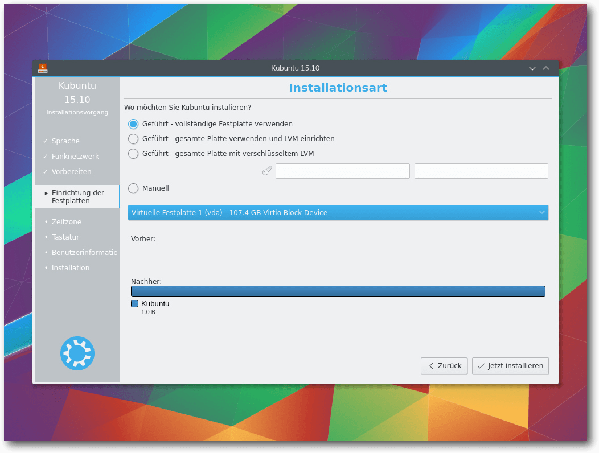Installation von Kubuntu 15.10: Auswahl der Installationsart.
Die einfachste Installation bietet ein Live-System, das als ISO-Image zum Download bereitsteht. Dieses „Desktop-Image“ ist etwas über 1,1 GB groß und kann auf DVD oder einem USB-Medium verwendet werden. Gegenüber der Vorversion ist es gleich groß geblieben. Das ISO der Kubuntu-Variante ist wie in der Vorversion gut 1,3 GB groß. Gegenüber der Vorversion hat sich an der Installation nur ein Punkt merklich geändert, und das ist die erneuerte Optik. Das Installationsprogramm Ubiquity bietet ähnlich wie der Debian-Installer oder Anaconda von Fedora alle Möglichkeiten an, die Festplatten zu partitionieren und das System darauf zu installieren. Die gesamte Festplatte oder einzelne Partitionen können verschlüsselt werden und LVM wird unterstützt, auch in Form einer automatischen Partitionierung. Nachdem die Partitionierung definiert ist, beginnt im Hintergrund bereits die Installation, die in weniger als einer halben Stunde abgeschlossen ist. Währenddessen wird man nach weiteren Parametern gefragt. Mit Zeitzone, Tastaturbelegung, Name und Passwort ist dieser Part auch schon abgeschlossen, weitere Optionen stehen im Standardmodus nicht zur Verfügung. Man kann die Installation aber auch in einem Expertenmodus starten. Eine Installation sollte gelingen, wenn wenigstens 512 MB Speicher für die Desktop-Version bzw. 256 MB beim Server vorhanden sind. Unter Umständen soll eine Installation mit 64 MB RAM bereits möglich sein. Zu empfehlen sind jedoch auf dem Desktop mindestens 1 GB, sodass alle benötigten Anwendungen zugleich ohne zu swappen laufen können, denn nur so läuft das System vollständig flüssig. 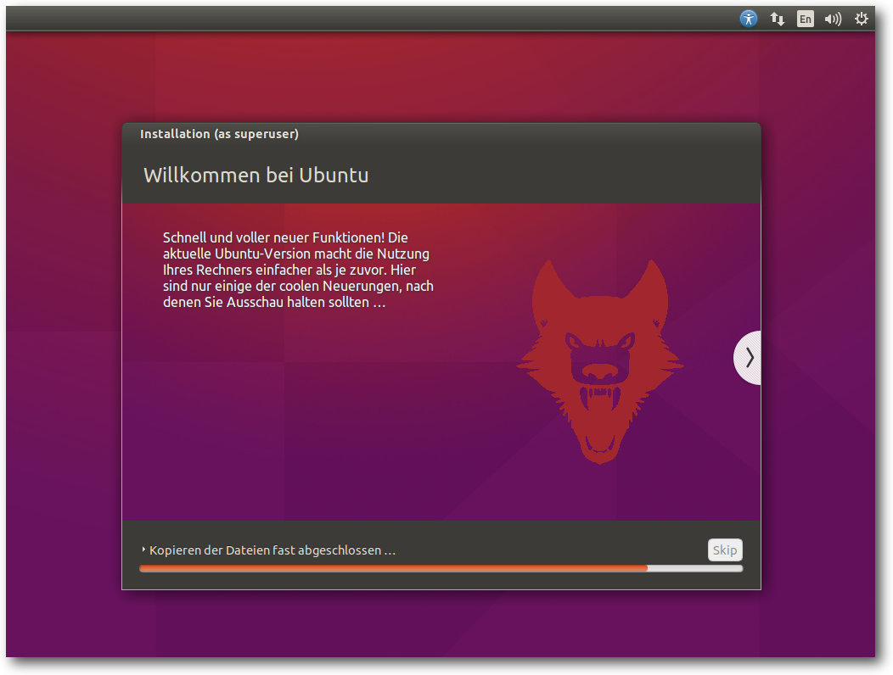
Ende der Installation.
Ausstattung
Sowohl Ubuntu als auch Kubuntu starten spürbar schneller als in den Vorversionen. Ubuntu (nicht aber Kubuntu) setzt eine Hardware-3D-Beschleunigung voraus, die bei Grafikkarten, die das nicht bieten, durch llvmpipe emuliert wird. Bei einer ausreichend schnellen CPU ist das Verfahren von der Geschwindigkeit immer noch gerade so erträglich, bei zwei oder mehr CPUs ist es mittlerweile ganz brauchbar, von sehr grafikintensiven Anwendungen abgesehen. Das Grafiksystem ist bei X.org 7.7 geblieben, da es keine neue Version von X.org in der Zwischenzeit gab. Allerdings wurden einige Komponenten von X.org aktualisiert, darunter der X-Server 1.17.2, ein nur geringfügiges Update, und Mesa 11.0.2. Unity liegt weiter in Version 7.3 vor. Unity 8 ist als Vorschau mit dabei. Ansonsten bringt Ubuntu 15.10 auf dem Desktop in erster Linie Korrekturen. Viele Anwendungen erhielten mehr oder weniger große Verbesserungen. LibreOffice wird in Version 5.0.2 mitgeliefert. Chromium 45 und Firefox 41 sind unter den mitgelieferten Webbrowsern zu finden. Der Linux-Kernel wurde wie nicht anders zu erwarten aktualisiert und ist jetzt in Version 4.2.0 enthalten. Von den vielen Verbesserungen, die er mit sich bringt, hebt Canonical in den Anmerkungen zur Veröffentlichung besonders den neuen AMDGPU-Kernel-Treiber hervor, der aktuelle und kommende Radeon-Grafikchips unterstützt, sowie die Unterstützung für Intel Broxton, Verschlüsselung auf dem Dateisystem F2FS und NV-DIMMs. Auch ein Kernel für den Raspberry Pi 2 wird bereitgestellt. systemd, seit Ubuntu 15.04 das Standard-Init-System, übernimmt jetzt auch die Sitzungsverwaltung, die bisher noch von Upstart erledigt wurde. Daneben hat systemd die Version 225 erreicht und die Diskussion um den Umstieg ist längst verstummt. Nach wie vor dürfte gelten, dass den Benutzern die neuen Befehle noch ungewohnt sind, was sich aber mit der Zeit legen wird. Upstart ist immer noch installiert und kann per Kernel-Kommandozeile aktiviert werden. Als Syslog-Daemon wird weiterhin rsyslog verwendet, das systemd-Journal kommt noch nicht zum Einsatz. Persistente Netzwerknamen sollen eine verlässliche Namensgebung für Netzwerkgeräte ermöglichen. Bei bestehenden Installationen wird allerdings keine Änderung vorgenommen. Die Desktop-Ausgabe [3] von Ubuntu 15.10 bringt auch den Bluetooth-Stack BlueZ 5.35 mit dem Verwaltungsprogramm Blueman 2.0 anstelle von GNOME-Bluetooth. Unterstützung für den neuen Steam Controller lässt sich leicht nachträglich installieren. Ubuntu Make [4], eine Werkzeugsammlung für Entwickler, die stets aktuell gehalten wird, unterstützt jetzt 20 Plattformen, wobei Plattform die Ubuntu-Bezeichnung für Entwicklungsumgebungen ist. So lassen sich mit einem einzelnen Befehl vollständige Umgebungen für die Programmiersprachen Go, Dart oder Java oder für die Android-Entwicklung installieren. Ubuntu Phone wird erstmals automatisch über das Mobilfunknetz auf die neue Version aktualisiert. Ubuntu Core [5], die reduzierte Version von Ubuntu, die als schlanke virtuelle Maschine für den Einsatz in Clouds gedacht ist, verwendet weiterhin das Paketverwaltungssystem Snappy, das atomare Systemupdates sicherstellt. Das zusätzliche Werkzeug „Snapcraft“ [6] soll es einfach machen, angepasste Varianten von Ubuntu Core zu erstellen. Snapcraft kann außerdem traditionelle Ubuntu-Pakete in Snappy-Pakete konvertieren. Ubuntu Server [7] wurde vor allem im Bereich der Virtualisierung erweitert. Zu den aktualisierten Paketen gehören OpenStack Liberty, Juju 1.24.6, libvirt 1.2.16, Qemu 2.3 und Open vSwitch 2.4.0. Der verteilte Objektspeicher Ceph und das gleichnamige Dateisystem wurden auf Version 0.94.3 gebracht. Neu ist der OpenStack Autopilot, der eine leistungsfähige und trotzdem einfache Möglichkeit darstellen soll, OpenStack auf Ubuntu zu konfigurieren. Neu sind auch LXD, eine Sammlung von Werkzeugen zur Konfiguration von Containern, die über LXC hinausgehen, und eine Vorschau auf das DPDK (Data Plane Development Kit) für Hochgeschwindigkeitsnetzwerke. Weitere offizielle Varianten von Ubuntu werden nicht von Canonical, sondern von der Gemeinschaft unterstützt. Kubuntu [8] setzt den Plasma-Desktop 5.4 und die KDE-Anwendungen in Version 15.08 ein. Lubuntu [9] installiert LXDE als Desktopumgebung und widmete sich in Version 15.10 überwiegend Korrekturen, da geplant ist, später auf LXQt umzustellen. Das Aussehen wurde verbessert, die Probleme verursachende Eingabemethode iBus wurde durch Fcitx ersetzt. Nicht mehr standardmäßig installiert ist die Auswahl zwischen unterschiedlichen Sitzungsarten, sie ist aber weiterhin verfügbar. 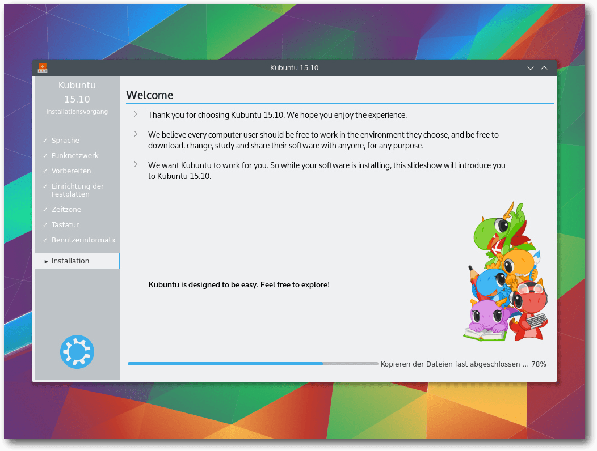Installation von Kubuntu 15.10: Abschluss.
Ubuntu GNOME [10] aktualisierte GNOME auf Version 3.16, wobei aber einige Komponenten wie der Dateimanager Nautilus bei Version 3.14 verblieben. Das ebenfalls GNOME-basierte Ubuntu Kylin [11], das an chinesische Benutzer angepasst ist, erhielt neben Aktualisierungen auch Korrekturen bezüglich der Internationalisierung. In Ubuntu Mate [12] wurde der gleichnamige Desktop auf Version 1.10 aktualisiert. Die Neuerungen dieser Version können einer separaten Übersicht entnommen werden. Die Entwickler von Ubuntu Studio 15.10 haben noch keine Angaben zu den Änderungen veröffentlicht. Auch Xubuntu [13], die Xfce-Ausgabe, enthält vorwiegend Aktualisierungen. Das neue Programm Panel Switch ermöglicht das Sichern und Wiederherstellen von Panels und bringt fünf vordefinierte Panel-Layouts mit. Dem Window-Manager wurden die Greybird-Icons für mehr Barrierefreiheit hinzugefügt. Wie gewohnt hat Root keinen direkten Zugang zum System, sondern die Benutzer der Gruppe sudo können über das Kommando sudo Befehle als Root ausführen. Der Speicherverbrauch von Unity ist gegenüber der Vorversion wieder gestiegen, was aber auch an der virtuellen Maschine oder anderen Faktoren liegen könnte. Rund 620 MB benötigt die Umgebung allein, ohne dass irgendwelche produktive Software gestartet wurde. Über 200 MB davon entfallen auf Compiz. KDE benötigt in der Standardinstallation mit einem geöffneten Terminal-Fenster etwa 590 MB und damit ebenfalls viel mehr als zuvor. Ein Teil dieses Speichers wird allerdings bei Platzbedarf in den Swap ausgelagert, sodass zusätzliches RAM frei wird. Bei KDE allerdings scheint der belegte Speicher tendenziell zu steigen, was auf Speicherlecks hindeutet. Die Messung des Speicherverbrauchs der Desktops kann jeweils nur ungefähre Werte ermitteln, die zudem in Abhängigkeit von der Hardware und anderen Faktoren schwanken. Aber als Anhaltspunkt sollten sie allemal genügen.
Unity
Nach all dem Vorgeplänkel nun zum eigentlichen Desktop. Unity, die offizielle Desktopumgebung von Ubuntu, blieb bei Version 7.3. Sie wurde lediglich um kleinere Neuerungen erweitert und poliert. So sind jetzt lokal integrierte Menüs für Fenster sichtbar, die nicht den Fokus haben. Eine weitere Änderung, die allerdings nicht in den offiziellen Anmerkungen zur Veröffentlichungen steht, ist, dass die Unity-eigenen Scrollbalken aufgegeben und durch die von GNOME ersetzt wurden. Das bedeutet, dass der Scrollbalken ausgeblendet ist, solange man nur mit der Tastatur arbeitet. Sobald man die Maus bewegt, wird der Scrollbalken eingeblendet. Dabei ist er standardmäßig nur sehr schmal und nur dort zu erkennen, wo sich der eigentliche Balken befindet. Der Rest ist in der Fenster-Hintergrundfarbe gehalten. Erst wenn man mit der Maus über den Balken fährt (egal an welcher Stelle des Fensterrandes), wird er hervorgehoben und breiter dargestellt. 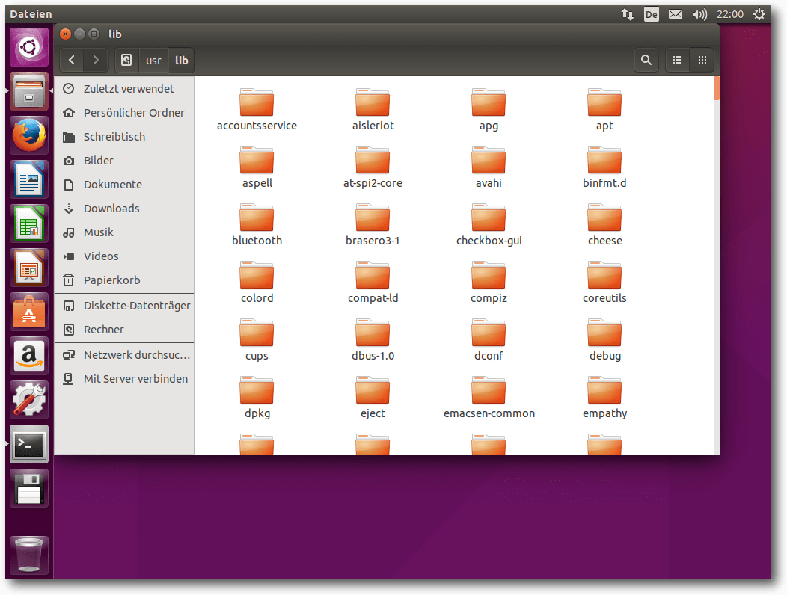Der neue Scrollbalken.
Die Unity-Übersichtsseite erhielt ebenfalls einige Verbesserungen. Es handelt sich dabei um Verbesserungen der Benutzbarkeit, die aber nicht genauer aufgezählt wurden. Da auf weitere Änderungen verzichtet wurde, bleibt Unity eine dezente, benutzbare Desktop-Umgebung, zu der alles Wesentliche bereits früher gesagt wurde. 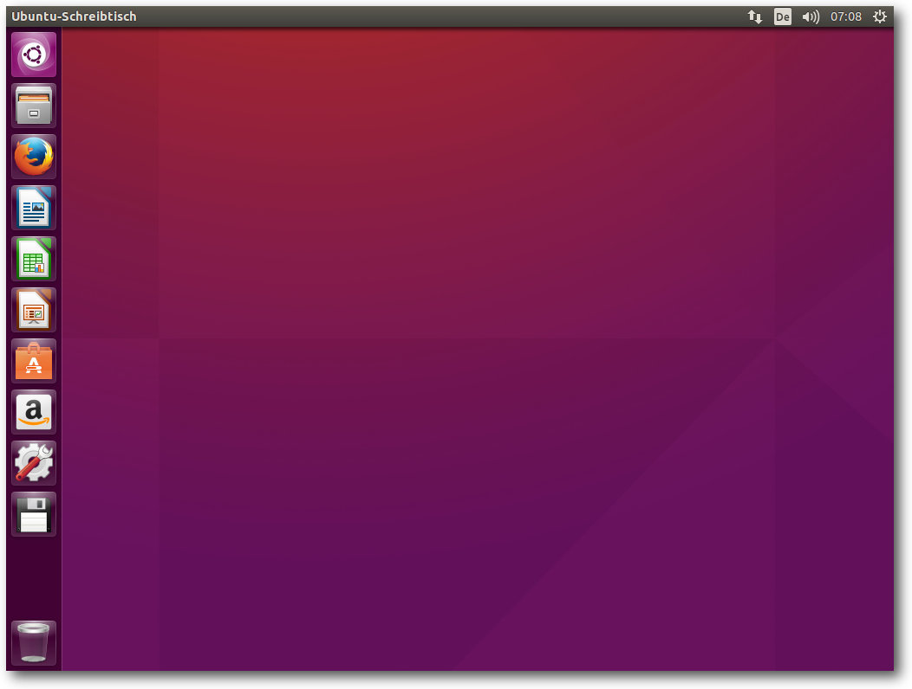
Ubuntu-Desktop (Unity-Übersichtsseite).
Der Standard-Webbrowser in Ubuntu ist Firefox, die Standard-Büro-Suite LibreOffice. Auffallend ist bei LibreOffice 5 neben den optischen Änderungen und Funktionserweiterungen, dass es deutlich schneller startet als frühere Versionen. Für E-Mails ist Thunderbird 38.3, dessen Icon nicht in die Startleiste eingebunden ist, zuständig. Die sonstigen installierten Programme sind im Wesentlichen die Standard-Programme von GNOME, die zumindest grundlegend die häufigsten Aufgaben abdecken. Daher sieht man sich gerne nach leistungsfähigeren Programmen im Software-Center um. 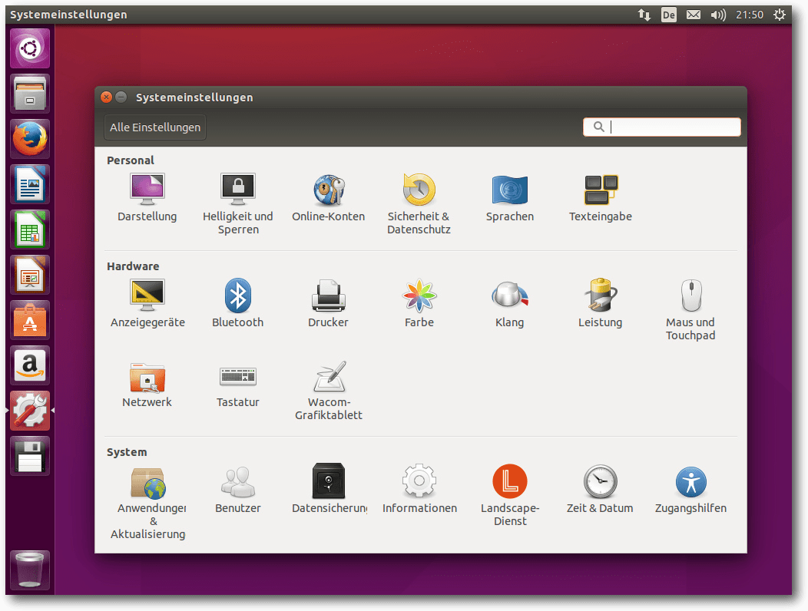
Die spärlichen Systemeinstellungen.
Apropos: Auch am Software-Center wurde außer kleinen Korrekturen nichts geändert. Das Software-Center bietet aber eine Fülle von zusätzlichen Applikationen, penibel in Kategorien unterteilt, und lädt durchaus zum Stöbern ein. Schnell werden selbst erfahrene Benutzer auf bisher unbekannte Programme stoßen, die sich als nützlich erweisen könnten. Selbst für Spezialgebiete ist Software paketiert. Allerdings bleibt es dabei, dass es im Web noch weitaus mehr Software gibt, als die Distributionen je bereitstellen können. Wer also im Software-Center nicht fündig wird, sollte eine ergänzende Websuche durchführen. Dass sich im Software-Center nichts geändert hat, liegt daran, dass es aufgegeben werden soll. Konkret plant Canonical jetzt [14], stattdessen das später entstandene „GNOME Software“ zu verwenden, das momentan noch deutlich weniger Funktionalität hat. Es soll daher um Plug-ins erweitert werden, um spezifische Anforderungen wie die von Ubuntu zu erfüllen, und auch Snappy-Pakete verwalten lernen. 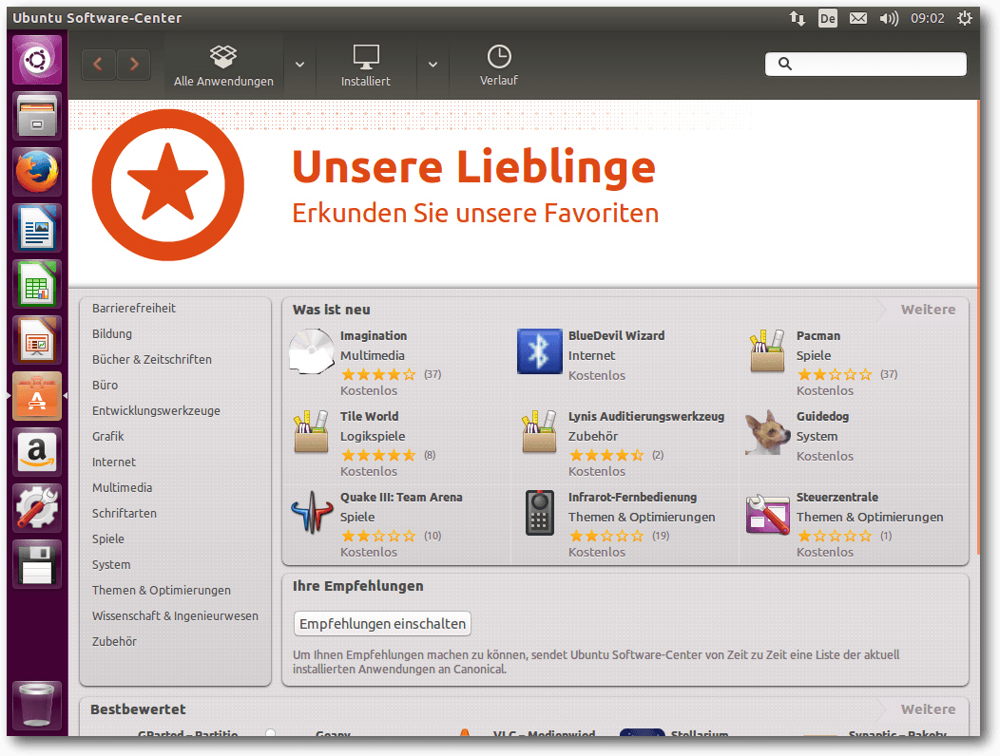
Das Software-Center.
KDE
Nach der Premiere von Plasma 5 in Kubuntu 15.04 steht nun eine aktualisierte Version, Plasma 5.4, bereit. Flankiert wird Plasma von den KDE-Anwendungen in Version 15.08, von denen etwa zwei Drittel bereits für KDE Frameworks 5 und damit Qt 5 kompiliert werden können. Bei welchen es tatsächlich der Fall ist, müsste man anhand der Bibliotheksabhängigkeiten im Einzelfall nachsehen. In Kubuntu 15.04 war Plasma 5 als noch nicht ganz reif für die Allgemeinheit deklariert, machte aber dennoch einen gut nutzbaren Eindruck, wenn auch nicht fehlerfrei. Zwar war das neue Aussehen etwas gewöhnungsbedürftig, die Funktionalität dagegen blieb im Großen und Ganzen erhalten. Die Aussage, dass kaum ein Anwender das Bedürfnis verspüren würde, zu Plasma 4 unter KDE 4 zurückzukehren, muss allerdings revidiert werden. Der Grund dafür sind nicht die kleinen Fehler, die stellenweise noch anzutreffen sind, denn die grundlegenden Funktionen stellten sich durchaus als brauchbar und stabil heraus. Jedoch scheinen in Plasma noch Speicherlecks zu klaffen, die schon nach wenigen Stunden Betrieb einige hundert Megabytes kosten. Zusammen mit anderen Fehlern zeigen die Speicherlecks, dass Plasma 5 auch über ein Jahr nach der Freigabe nicht ausgereift ist und dass die Integration in die Distribution wieder einmal viel zu früh kam. Einer dieser kleinen Fehler tritt zum Beispiel beim Löschen eines Kurzbefehls auf. Löschen kann man ihn nur, indem man das Eingabefeld leert. Beim Versuch, das zu speichern, kommt eine Warnung, dass der „leere“ Kurzbefehl bereits verwendet werde. Ein anderer Fehler ist, dass sich Panel-Applets offenbar beliebig oft laden lassen – mit entsprechenden Folgen für die Optik. Das Applet zur Überwachung der Speicherbelegung wird zudem völlig falsch dargestellt. 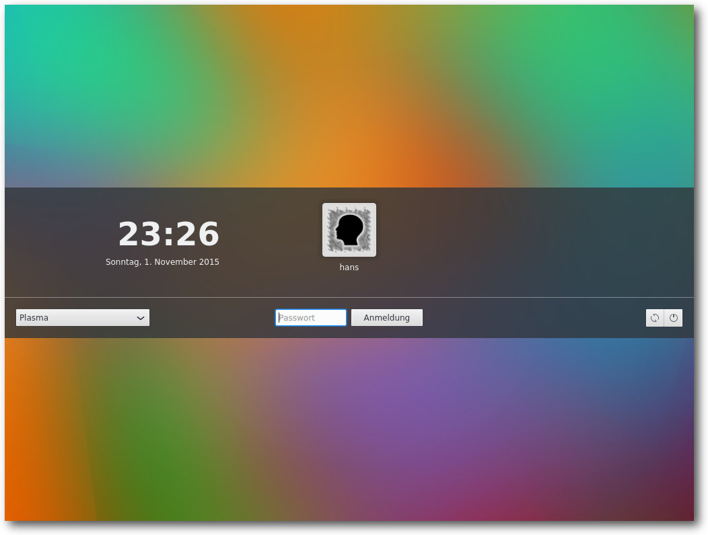Login-Bildschirm von KDE.
Kein Fehler, aber etwas ungünstig ist das Design der Scrollbalken, die dünner als bei Unity dargestellt werden. Das macht es schwerer, sie mit der Maus zu treffen. Ein Ausblenden wie bei GNOME, wenn sie gerade nicht benötigt werden, gibt es nicht. Plasma bleibt auch in der neuesten Version zu verspielt für professionelle Nutzer, da zu viele Effekte standardmäßig aktiviert sind. Es wäre besser, standardmäßig alles auszuschalten, was den Arbeitsfluss stört oder verlangsamt, insbesondere Transparenz und Animationen. Ein Webbrowser kommt ja auch nicht mit Dutzenden von Erweiterungen vorinstalliert. Wenigstens funktionieren die Effekte, im Gegensatz zu Unity, auch ohne Hardware-3D-Beschleunigung mit akzeptabler Geschwindigkeit. Auch Kubuntu installiert Firefox als Standard-Browser. Als Musik-Player ist Amarok 2.8 vorinstalliert, wie schon seit Kubuntu 13.10. KDE PIM mit Kontact ist in Version 4.15.8 installiert. Außerdem ist LibreOffice vorhanden. Weitere Anwendungen muss man aus den Repositories nachinstallieren, wenn man sie braucht. Die Paketverwaltung Muon trägt jetzt die Versionsnummer 5.4.2 und ist bereits an KDE 5 (das nicht so heißen will) angepasst. Muon-Discover ähnelt ein wenig dem Software-Center, weist aber weniger Funktionen auf und funktioniert weiterhin gut. 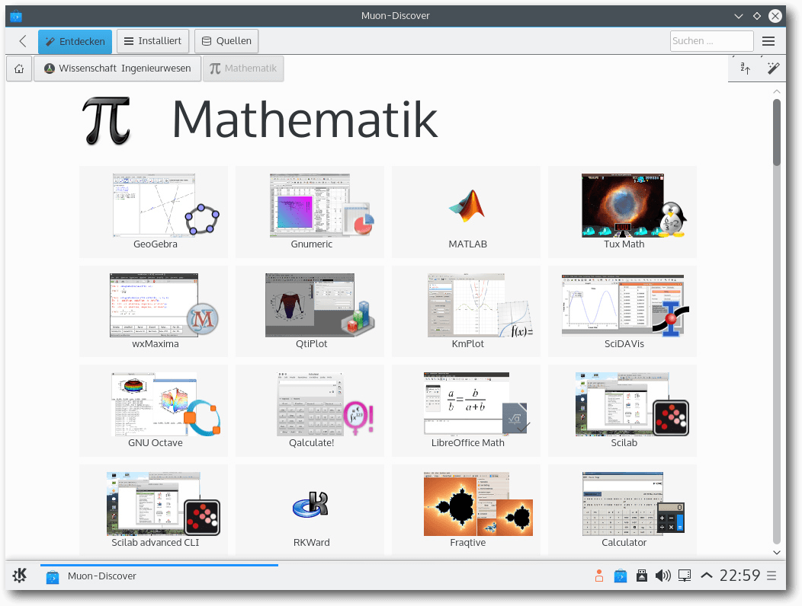
Programmkategorie in Muon.
Multimedia im Browser und auf dem Desktop
Nicht viel Neues gibt es im Multimedia-Bereich. OpenH264 ist nun als Plug-in vorinstalliert und auch aktiviert. Anscheinend geht Ubuntu hier nicht mehr den Umweg, das Plug-in beim ersten Aufruf von Firefox erst herunterzuladen. Die vorinstallierte Firefox-Erweiterung „Ubuntu Firefox Modifications“ ist jetzt bei Version 3.2. Weitere Browsererweiterungen sind nun nicht mehr vorinstalliert. Wie immer muss man zum Abspielen der meisten Video-Formate (und diverser Audio-Formate wie z. B. auch für MP3-Dateien) zuerst das passende Plug-in installieren. Die Software-Verwaltung weist jetzt darauf hin, dass einige dieser Plug-ins von Softwarepatenten belastet sein könnten, was aber zumindest Privatnutzern völlig egal sein kann. Wenn man ein zusätzliches Plug-in benötigt, wird dies unter Unity und GNOME von den jeweiligen Anwendungen in einer Dialogbox angezeigt. Diese sucht nach passenden GStreamer-Plug-ins, schlägt sie zur Installation vor und kann sie anschließend installieren. Das funktioniert korrekt, nach der Plug-in-Installation muss man allerdings die Player-Software neu starten. Auch Web-Videos funktionieren weitgehend. Die Ubuntu-Version von Firefox kann über GStreamer alles abspielen, wofür Plug-ins installiert sind, also auch Flash. Lediglich Webseiten, die explizit das Adobe-Flash-Plug-in verlangen, funktionieren so nicht. Das Flash-Plug-in gibt es für Firefox bzw. Iceweasel zwar noch, es wird aber bis auf Korrekturen von Sicherheitslücken nicht mehr gepflegt. Das größte Problem ist jedoch, dass Mozilla den Benutzern viele lästige Hürden in den Weg legt, wenn sie das Plug-in weiter nutzen wollen. Workarounds sind die Verwendung eines anderen Browsers wie Google Chrome oder Chromium mit dem von Google stammenden proprietären Pepperflash-Plugin [15]. Andere Workarounds sind das Herunterladen der Videos, um sie anschließend in einem Player offline oder als Stream anzusehen, oder die Installation von Gnash, das jedoch keinen Erfolg garantiert. Unter KDE sieht es im Prinzip genauso aus, nur dass die Geschwindigkeit auch ohne 3D-Hardware akzeptabel ist. Amarok ist der Standard-Audioplayer. Früher wurden auch unter KDE fehlende Plug-ins korrekt nachinstalliert oder waren bereits vorhanden. Das ist in 15.10 nicht der Fall. Amarok und Dragonplayer funktionieren schlicht nicht, wenn die Plug-ins fehlen. Leider scheint auch jegliche Unterstützung für die Nachinstallation zu fehlen. Es bleibt nur die Installation von Hand mittels der Paketverwaltung, im Wesentlichen betrifft das die Pakete gstreamer1.0-plugins-ugly, gstreamer1.0-plugins-bad-videoparsers und gstreamer-libav. 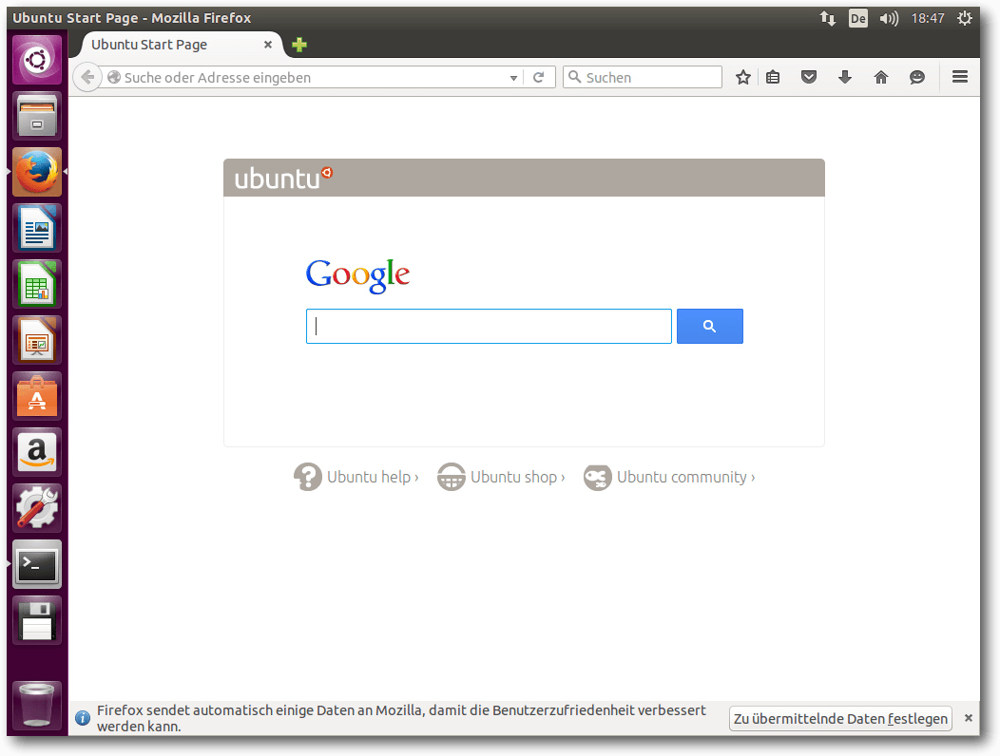Firefox 41 in Ubuntu.
Fazit
Ubuntu 15.10 enthält nur wenige sichtbare Neuerungen und dürfte vor allem für all jene, die den neuesten Stand vor allem gegenüber Stabilität bevorzugen, eine klare Sache sein. Die neue Version der Distribution läuft in allen Varianten gut und stellt eine solide Basis für Applikationen und Entwicklungen dar. Eine Ausnahme muss man wohl bei der KDE-Implementation machen. Es dauert nicht sehr lange, herauszufinden, dass Plasma 5 noch nicht wirklich ausgereift ist und nicht alles so funktioniert, wie es sollte. Zudem krankt der Multimedia-Bereich heftig. Von dieser Desktopumgebung ist daher dieses Mal eher abzuraten. Vielleicht werden aber demnächst auch einige Updates veröffentlicht, die die Probleme beheben. Eigentlich hätte man für die letzte Ausgabe vor der nächsten LTS-Version mehr grundlegende Änderungen erwartet, zum Beispiel Unity 8. Man darf gespannt sein, ob dieses nun in Ubuntu 16.04 LTS kommt. Falls ja, hätte es weniger Gelegenheit zum Testen und Reifen gehabt, als wünschenswert wäre. Andererseits dürfte eine Verschiebung auf eine spätere Version auch keine Option sein. Für die Mehrzahl der Benutzer dürfte trotzdem die letzte LTS-Version 14.04 „Trusty Tahr“ (siehe freiesMagazin 06/2014 [16]) die bessere Wahl darstellen. Denn letztlich bleiben die Nicht-LTS-Versionen Betaversionen, die die meisten Benutzer nicht benötigen. Aktualisierungen sollten keinen Grund zu einem Verlassen der LTS-Version darstellen, da sie auch in der LTS-Version zahlreich bereitgestellt werden. Ubuntu und die anderen Varianten (Kubuntu sei dieses Mal ausgespart) sind und bleiben eine der ersten Empfehlungen, wenn es um die Wahl der Linux-Distribution geht. Links[1] http://www.pro-linux.de/artikel/2/print/1799/ubuntu-und-kubuntu-1510.html
[2] http://www.freiesmagazin.de/freiesMagazin-2015-06
[3] http://insights.ubuntu.com/2015/10/22/whats-new-in-ubuntu-15-10-desktop-and-devices/
[4] https://wiki.ubuntu.com/ubuntu-make
[5] https://developer.ubuntu.com/en/snappy/
[6] https://developer.ubuntu.com/en/snappy/build-apps/your-first-snap/
[7] http://insights.ubuntu.com/2015/10/22/whats-new-in-ubuntu-15-10-cloud-and-server/
[8] https://kubuntu.org/news/kubuntu-15-10/
[9] http://lubuntu.net/blog/lubuntu-1510-wily-werewolf-released
[10] http://ubuntugnome.org/
[11] https://wiki.ubuntu.com/Ubuntu Kylin
[12] https://ubuntu-mate.org/ubuntu-mate-1510-presskit/
[13] http://xubuntu.org/news/xubuntu-15-10-release/
[14] http://www.pro-linux.de/news/1/22939/ubuntu-1604-ersetzt-ubuntu-software-center-mit-gnome-software.html
[15] https://wiki.debian.org/PepperFlashPlayer
[16] http://www.freiesmagazin.de/freiesMagazin-2014-06
| Autoreninformation |
| Hans-Joachim Baader (Webseite) befasst sich bereits seit 1993 mit Linux. 1994 schloss er erfolgreich sein Informatikstudium ab, machte die Softwareentwicklung zum Beruf und ist einer der Betreiber von Pro-Linux.de. |
Beitrag teilen Beitrag kommentieren
Zum Inhaltsverzeichnis
Der November im Kernelrückblick
von Mathias Menzer Basis aller Distributionen ist der Linux-Kernel, der fortwährend weiterentwickelt wird. Welche Geräte in einem halben Jahr unterstützt werden und welche Funktionen neu hinzukommen, erfährt man, wenn man den aktuellen Entwickler-Kernel im Auge behält.Die Veröffentlichung von Linux 4.3
Linux 4.3 kam nur auf sieben Entwicklerversionen und wurde Anfang November freigegeben [1]. Die Änderungen zum siebten Release Candidate hielten sich in Grenzen und beschränkten sich auf kleine Erweiterungen wie neue Device-IDs für LTE-USB-Modems oder einen Treiber für DP83848-Chips, der mit einer hohen Temperaturtoleranz für besonders strapazierfähige Netzwerkschnittstellen geeignet ist, die auch militärischen Standards genügen. Des Weiteren finden sich noch letzte Korrekturen, darunter an vSwitch, der Kernel-internen Infrastruktur für virtualisierte Switches. Die Entwicklung von Linux 4.3 dauerte 64 Tage und liegt damit gut im Durchschnitt. Der neue Kernel hat etwas weniger Änderungen aufzuweisen als sein Vorgänger, ist aber mit über 13000 Code-Zeilen weit oberhalb des Durchschnitts der 4er- und 3er-Kernelreihen. Die richtig großen Killer-Features weist Linux 4.3 dennoch nicht auf, sondern stellt eher einen kleinen, aber sicheren Schritt nach vorne dar [2]. Dazu trägt auch bei, dass IPv6 [3] nun mit den Standardeinstellungen des Linux-Kernels aktiv ist [4], sodass Rechner künftig neben der Kommunikation mit IPv4 auch IPv6 nutzen können. Obwohl die verschiedenen Linux-Distributoren ihre angepassten Kernel teilweise schon seit Jahren mit aktiver IPv6-Unterstützung ausliefern, stellt diese Änderung doch einen bedeutenden Schritt für die Umsetzung des neuen Internet-Protokolls in Linux dar, die im kommenden April schon auf eine zehnjährige Geschichte zurückblicken kann. Etwas mehr Aufwand stellte die Entfernung des Ext3-Treibers dar. Wohlgemerkt, nur der Treiber ist verschwunden, Ext3 [5] als Dateisystem selbst wird weiterhin unterstützt. Diese Aufgabe übernimmt jedoch künftig der Treiber des Nachfolgers Ext4 [6]. Dieser wird immerhin seit fast sieben Jahren als stabil erachtet und gilt unter Entwicklern als besser implementiert. Auch hier gilt, dass verschiedene Distributionen – darunter SUSE und RedHat – bereits auf diese Variante setzen, um Ext3-Dateisysteme anzusprechen. Insofern ist dieser Weg auch bereits erprobt. Etwas tiefer im Inneren des Linux-Kernels findet sich nun strscpy() [7], eine neue Funktion, die für das Kopieren von Zeichenketten genutzt werden kann. Es handelt sich hierbei nicht um die erste Implementierung, doch hat strscpy() gegenüber den beiden alteingesessenen Alternativen einige Vorteile. Zum einen wird die Größe des zu beschreibenden Speicherbereichs berücksichtigt und sollte die kopierte Zeichenkette kleiner sein, so wird der Rest mit Nullzeichen [8] aufgefüllt. Ist sie zum anderen jedoch größer als der anvisierte Speicherbereich, so gibt strscpy() den Teil als Rückgabewert, der nicht hineingepasst hat. In jedem Fall wird der String mit einem Nullzeichen abgeschlossen, wodurch die Verarbeitung von Zeichenketten vereinfacht wird. Und auch die nun sauberen Rückgabewerte über den Erfolg des Vorgangs und gegebenenfalls den nicht kopierten Rest stellen im Vergleich zu den bisherigen Lösungen eine Verbesserung dar, die vermutlich bald von den Linux-Entwicklern angenommen werden wird. Die bereits 2007 eingeführten Control Groups oder cgroups [9] werden dazu verwendet [10], die Nutzung der Systemressourcen zu begrenzen, sodass nach bestimmten Kriterien zusammengehörige Prozesse nicht so verschwenderisch damit umgehen, dass das System nicht mehr verwendbar ist. Eine Erweiterung ermöglicht es nun, die Zahl der Prozesse in einer Control Group zu begrenzen. Dadurch lassen sich Forks [11], also Abspaltungen eines aktiven Programms, im Zaum halten. Diese waren bislang, ob nun aus Versehen oder in bösartiger Absicht, durchaus dazu geeignet um Systeme einfrieren zu lassen [12]. Auch im Umfeld der Grafik-Treiber gab es ein paar Neuerungen: Der in der letzten Linux-Version hinzugekommene Treiber AMDGPU wurde um die Unterstützung für die Fiji-Grafikkern-Architektur erweitert, die in einigen aktuellen Chipsätzen der Serie Radeon R9 verwendet wird. Im Umfeld des Nouveau-Grafiktreibers wurde etwas aufgeräumt und außerdem wurden Verbesserungen vorgenommen, die Performance-Messungen und Fehlersuche erleichtern. Die Intel-Treiber unterstützen nun die Skylake-Prozessorarchitektur [13], die auch einen Grafikkern beinhaltet.Die Entwicklung von Linux 4.4
Vierzehn Tage nach Linux 4.3 legte Torvalds bereits den Nachfolger auf Kiel. Mit Linux 4.4-rc1 [14] machen die Entwickler keine halben Sachen, er liegt mit über 12000 Commits klar im oberen Bereich der letzten rc1-Versionen. Ein guter Teil der geänderten Code-Zeilen entfällt auf Umstrukturierungen der WLAN-Treiber für Realtek-Chips, bei dem nur Code verschoben wurde ohne Funktionen aufzunehmen, zu ändern oder gar zu entfernen. Dagegen kann der AMDGPU-Treiber nun eine erste Implementierung aufweisen, die ihn auf die kommende Stoney-Ridge-Architektur vorbereitet und im Umfeld der Netzwerktreiber kamen für Broadcoms NetXtreme-C/E-Familie und Qlogics QL4xxx-iSCSI- Chips [15] neu umgesetzte Treiber hinzu. Die zweite Entwicklerversion [16] lieferte dann eher erste Korrekturen nach. Eine auffällige Änderung war hier jedoch die Entfernung eines Netzwerk-Treibers. ipg diente seit acht Jahren dazu, Netzwerk-Chips vom Typ IP1000A anzusteuern. Diese Chip-Familie wurde vom Hersteller bereits als „End of Life“ deklariert, außerdem kann ein anderer Treiber, der eigentlich für Ethernet-Karten von D-Link gedacht war, in die nun geschaffene Lücke springen, falls der Bedarf da wäre. Kompakt und unauffällig kommt Linux 4.4-rc3 [17] daher. Er hat Korrekturen für die Grafik-Treiber Nouveau und AMDGPU im Gepäck, außerdem wurden Fehler des Dateisystems btrfs und an der Virtualisierungs-Infrastruktur KVM behoben. Einige der größeren Korrekturen betreffen den lightnvm-Treiber [18]. Dieser soll künftig die Verwaltung von Open-Channel-SSDs [19] übernehmen können. Diese spezielle Art von auf Flash-Speichern aufbauenden Datenträgern besitzt keine eigene Verwaltung des Flash-Speichers. Die Idee dahinter ist, dass diese als NVM Express [20] bezeichneten SSDs ohne spezifische Treiber auskommen können und in bestimmten Nutzungsfällen, zum Beispiel bei parallelen Zugriffen, eine bessere Leistung erzielen sollen. Noch ist der Entwicklungszyklus für Linux 4.4 nicht abgeschlossen und dennoch verkündete Greg Kroah-Hartman auf Google+ kurz und knapp, dass diese Version der neue Kernel mit Langzeitunterstützung werden wird [21]. Diese Ankündigung kam sogar noch, bevor Linux 4.3 veröffentlicht worden war und damit natürlich auch, bevor die Entwicklung von Linux 4.4 überhaupt begonnen hatte und dürfte auf den Wunsch einiger Entwickler zurückzuführen sein, die LTS-Versionen besser einplanen zu können. Als direktes Ergebnis denken die Ubuntu-Entwickler bereits darüber nach, den kommenden Langzeit-Kernel als Basis für die im April erwartete LTS-Version von Ubuntu zu nutzen [22].Eine Warterunde für kdbus
Der Kernel-eigene Dienst für Interprozess-Kommunikation wird auf absehbare Zeit erst einmal nicht aufgenommen werden. Obwohl kdbus zwischenzeitlich im Entwicklungs-Zweig von Fedora gelandet war, wurde er daraus auf Betreiben der kdbus-Entwickler wieder zurückgezogen [23]. Auch aus linux-next wurde der Code entfernt. Die Entwickler haben vor, kdbus zu überarbeiten, legen sich jedoch nicht auf einen Zeitplan fest. Sowohl systemd-Entwickler Lennart Poettering als auch Greg Kroah-Hartman, der sich für die baldige Aufnahme von kdbus in den Linux-Kernel stark gemacht hatte, sehen noch einige Schwierigkeiten, die sich anscheinend nicht so einfach aus der Welt schaffen lassen [24]. Dabei bietet der Ansatz, einen Dienst in den Kernel aufzunehmen, der die Kommunikation von Prozessen untereinander ermöglicht, durchaus Nutzen. So wäre dieser Dienst früher während des Systemstarts verfügbar als der derzeitige Quasi-Standard D-Bus [25] und könnte auch ressourcenverträglicher arbeiten. Dies gilt insbesondere, wenn größere Datenmengen zwischen Anwendungen ausgetauscht werden müssen, da hier eine Kernel-eigene Umsetzung statt eines Kopiervorgangs einfach einen Verweis auf den entsprechenden Speicherbereich anlegen könnte. Links[1] https://lkml.org/lkml/2015/11/1/202
[2] http://heise.de/-2860564
[3] https://de.wikipedia.org/wiki/IPv6
[4] https://git.kernel.org/cgit/linux/kernel/git/torvalds/linux.git/commit/?id=de551f2eb22a77a498cea9686f39e79f25329109
[5] https://de.wikipedia.org/wiki/Ext3
[6] https://de.wikipedia.org/wiki/Ext4
[7] https://git.kernel.org/cgit/linux/kernel/git/torvalds/linux.git/commit/?id=30035e45753b708e7d47a98398500ca005e02b86
[8] https://de.wikipedia.org/wiki/Nullzeichen
[9] https://en.wikipedia.org/wiki/Cgroups
[10] https://git.kernel.org/cgit/linux/kernel/git/torvalds/linux.git/commit/?id=49b786ea146f69c371df18e81ce0a2d5839f865c
[11] https://de.wikipedia.org/wiki/Fork_(Unix)
[12] https://de.wikipedia.org/wiki/Forkbomb
[13] https://de.wikipedia.org/wiki/Intel-Skylake-Mikroarchitektur
[14] https://lkml.org/lkml/2015/11/15/168
[15] https://de.wikipedia.org/wiki/ISCSI
[16] https://lkml.org/lkml/2015/11/22/207
[17] https://lkml.org/lkml/2015/11/29/293
[18] https://git.kernel.org/cgit/linux/kernel/git/torvalds/linux.git/commit/drivers?id=cd9e9808d18fe7107c306f6e71c8be7230ee42b4
[19] http://lightnvm.io/
[20] https://de.wikipedia.org/wiki/NVM_Express
[21] https://plus.google.com/+gregkroahhartman/posts/WMEWz4noxFm
[22] https://wiki.ubuntu.com/KernelTeam/Newsletter/2015-11-24
[23] http://www.pro-linux.de/-0h21598a
[24] http://www.pro-linux.de/-0h2159a8
[25] https://de.wikipedia.org/wiki/D-Bus
| Autoreninformation |
| Mathias Menzer (Webseite) behält die Entwicklung des Linux-Kernels im Blick, um über kommende Funktionen von Linux auf dem Laufenden zu bleiben und immer mit interessanten Abkürzungen und komplizierten Begriffen dienen zu können. |
Beitrag teilen Beitrag kommentieren
Zum Inhaltsverzeichnis
Thruk – Besser überwachen
von Hans-Joachim Baader Nagios [1] ist ein bekanntes freies Netzwerküberwachungssystem. Es kommt zwar mit einer Web-Oberfläche im Lieferumfang, diese ist jedoch überaltert und sehr limitiert im Funktionsumfang. Hier kommt Thruk [2] ins Spiel. Es gibt zwar noch andere Oberflächen für Nagios, aber Thruk wird aktiv und recht schnell entwickelt. Der Artikel gibt eine kleine Übersicht über die Software. Redaktioneller Hinweis: Der Artikel „Thruk – Besser überwachen“ erschien erstmals bei Pro-Linux [3]. Gegenüber der Nagios-GUI bietet Thruk zahlreiche Neuerungen. So ist es nicht nur für Nagios, sondern auch für Icinga [4] und Shinken [5] benutzbar – und das für alle Systeme gleichzeitig, da es für jedes Monitoring-System einen Tab anlegt. Man kann nicht nur leicht zwischen diesen wechseln, sondern auch die Checks aller Systeme zusammengefasst ansehen. Der Name Thruk hat laut den Entwicklern keine Bedeutung und wird wie „Truck“ gesprochen. Durch die Verwendung von FastCGI will Thruk schneller und effizienter sein, zudem sind die angezeigten Daten der Live-Zustand der Engine und nicht verzögert. Es bietet besseres Logging, erweiterte Suche in den Logdateien, einen Anzeigemodus ohne Frames, verschiedene Themes, Plugins, ein Konfigurationsprogramm, erweiterte Berichte, die auch als PDF erstellt werden können, eine frei konfigurierbare Übersichtsseite (Dashboard) und eine Business Process-Erweiterung. 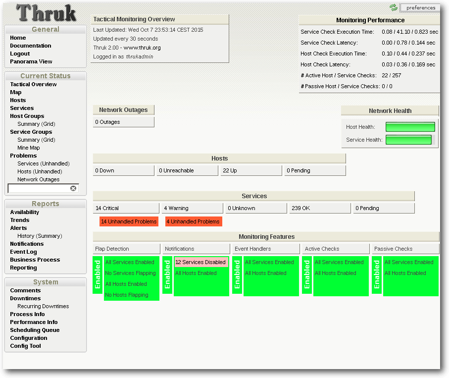Taktische Übersichtsseite von Thruk.
Installation
Thruk ist am einfachsten auszuprobieren, indem man die Open Monitoring Distribution (OMD [6]) installiert. Dort ist es als eine von vier Oberflächen-Optionen (neben Nagios, NagVis und Check_MK) verfügbar. In diesem Artikel soll jedoch die manuelle Installation von Thruk vorgestellt werden.Livestatus-Modul in Nagios einbinden
Um eine alternative Oberfläche wie Thruk oder auch andere Anwendungen in Nagios einzubinden, benötigt man das Livestatus-Modul. Livestatus von Mathias Kettner ist ein Plug-in, das direkt in den Kern von Nagios geladen wird und den Status des Servers über einen Unix Domain Socket zur Verfügung stellt. Das ist um ein Vielfaches effizienter als die traditionelle Methode, die Datei status.dat zu parsen. Shinken hat Livestatus bereits integriert. Livestatus ist im Paketarchiv vieler Distributionen zu finden. Ist das nicht der Fall, kann man es von der Livestatus-Homepage [7] herunterladen. Dann muss man es allerdings selbst kompilieren, wofür ein C++-Compiler (z. B. G++) und die dazugehörigen Werkzeuge installiert sein müssen. Bei Debian, Fedora, Red Hat und kompatiblen Systemen heißt das Binärpaket check-mk-livestatus und setzt trotz des Namens kein check_mk [8] voraus. Die Konfiguration besteht aus einer einzigen Zeile in der Haupt-Nagios-Konfigurationsdatei, die man beispielsweise als /etc/nagios3/nagios.cfg angelegt hat. Folgende Zeile muss hinzuzufügt werden:broker_module=/usr/lib/check_mk/livestatus.o /run/nagios3/live
Hier wird der Unix Domain Socket unter dem Namen live im Verzeichnis
/run/nagios3 angelegt, das ohnehin schon existiert. Möglich sind aber
auch andere Orte, darunter /var/lib/nagios3/rw. Man muss sich für einen
Ort entscheiden und diesen Pfad bei Programmen angeben, die darauf
zugreifen. Um die Konfigurationsänderung wirksam zu machen, führt man wie
immer eine Konfigurationsprüfung durch und startet den Server dann neu:
# nagios3 -v /etc/nagios3/nagios.cfg
# service nagios3 restart
Auf neueren Systemen mit Systemd kann statt der letzten Zeile auch
# service nagios3 restart
# systemctl restart nagios3
verwendet werden. Will man den Livestatus über das Netzwerk zugänglich
machen, genügt der
Unix Domain Socket nicht. In diesem Fall verwendet man
einen Remote-Zugriff über SSH oder einen Inet-Daemon wie inetd oder xinetd.
Dies ist auf der
Livestatus-Homepage [7]
ausführlich beschrieben, wo man zudem noch viele weitere Informationen
findet, unter anderem zur umfangreichen Abfragesprache von Livestatus.
Thruk installieren
Installationspakete von Thruk findet man dankenswerterweise auf der Download-Seite [9] des Projekts in großer Auswahl. Geht man dort in das Verzeichnis pkg und scrollt nach unten zur letzten Version (2.0.2), findet man Binärpakete für einige der wichtigsten Distributionen in mehreren Versionen, darunter Debian, Fedora, Red Hat Enterprise Linux, Suse Linux Enterprise und Ubuntu. Thruk besitzt einige wenige Abhängigkeiten, darunter Apache mit FastCGI und Perl. Genaueres kann man der Installationsanleitung [10] entnehmen. Unter Debian 7 kam es beim Installationsversuch zu einem Paketkonflikt, da libgd2-xpm verlangt, aber libgd2-noxpm installiert war. Durch die explizite Installation von libgd2-xpm konnte das gelöst werden, ohne das Paketsystem zu verbiegen. Ferner werden auch die Pakete libapache2-mod-fcgid und libxpm4 benötigt. Unter anderen Distributionen funktioniert die Installation hoffentlich reibungslos.Benutzung
Die Thruk-Oberfläche sieht auf den ersten Blick ähnlich aus wie die Nagios-Oberfläche – so ähnlich, dass die Funktionen weitgehend identisch sind. Das ist kein Wunder, schließlich ist sie direkt von der Nagios-Oberfläche abgeleitet. So fühlt man sich auch gleich heimisch. Um jedoch die überwachten Systeme zu sehen, muss man erst einmal ein Backend konfigurieren, was im Menü „Config -> ToolBackends“ geschieht. Alle Funktionen von Thruk zu beschreiben würde den Rahmen des Artikels sprengen. Thruk verfügt über eine sehr ausführliche (englische) Dokumentation [11] sowie eine kurze Übersicht [12] mit vielen Screenshots. Thruk kann sich, wie bereits angedeutet, mit beliebig vielen Überwachungssystemen verbinden. Dabei werden Naemon, Nagios, Icinga und Shinken unterstützt und deren Ergebnisse lassen sich beliebig in eine gemeinsame Ansicht einblenden. Die einzelnen Systeme können sogar in Gruppen aufgeteilt werden. Das Panorama-Plug-in ermöglicht es, sich individuelle Übersichtsseiten zusammenzustellen. Das ist jedoch, wie die gesamte Konfiguration eines Netzwerküberwachungssystems, mit einiger Arbeit verbunden, da es keine vorgegebenen Seiten gibt und man daher mit einer leeren Seite beginnt. Es stehen zahlreiche Elemente zur Verfügung, die man in die Seite einbinden kann, auch Hintergrund- und andere Bilder. Mehrere Seiten lassen sich verbinden und mit Aktionen verknüpfen. So kann man sich seine eigene Steuerzentrale definieren. Ein weiteres Plug-in ermöglicht das Erstellen von umfassenden SLA-Berichten (Berichte, die die Verfügbarkeit in bestimmten Zeiträumen darstellen) in HTML oder im PDF-Format. Diese können auch regelmäßig automatisch generiert und per E-Mail versandt werden. Jede andere Thruk-Seite kann ebenfalls per E-Mail versandt werden. Unternehmensvorgänge lassen sich mit einem weiteren Plug-in nachbilden. Das Plug-in stellt einen Online-Editor und Benachrichtigungen zur Verfügung. Suchanfragen lassen sich als Lesezeichen speichern und zum persönlichen Menü hinzufügen. Das Menü kann auch für alle Benutzer über die Datei menu_local.conf angepasst werden. Alle Seiten von Thruk können auch in echte MS Excel-Dateien exportiert werden. Mit einem eingebauten Konfigurationswerkzeug kann man die Objektkonfiguration des Überwachungssystems auf die Schnelle ändern, ebenso die Konfiguration von Thruk selbst und die Benutzerzugänge. Von der Thruk-Oberfläche lassen sich problemlos mehrere Kommandos auf einen Schlag versenden. Wenn man eine erneute Prüfung von Hosts oder Diensten anfordert, wartet Thruk, bis diese erledigt ist, und zeigt dann das Ergebnis an. Die dargestellten Daten, die mitunter ziemlich umfangreich werden können, lassen sich nach verschiedenen Kriterien filtern, auch nach mehreren zugleich. Host- und Dienstenamen kann man aus Auswahlboxen bequem auswählen, und auch reguläre Ausdrücke sind möglich. Wenn eine action_url /pnp4nagios/ enthält, wird automatisch ein Graph für Hosts oder Dienste angezeigt, der auf PNP4Nagios [13] verlinkt, wo man Detailinformationen angezeigt bekommt. Gibt ein Check mehrere Zeilen aus, wie es bei Sensordaten, check_multi und vielen anderen vorkommen kann, markiert Thruk die Ausgabe in Blau, und ein Klick zeigt die vollständige Ausgabe. Zusätzlich besitzen aber auch Kommentare und Abschaltzeiten ein Popup, in dem die kompletten Daten angezeigt werden. Ein weiteres Feature ist die Mine Map, die sich auch in eine Übersichtsseite einbauen lässt. Sie gibt einen schnellen Überblick über den Zustand der Dienste und ist besonders nützlich, wenn man auf vielen Hosts immer dieselben Dienste überwacht. Nicht zuletzt wurde auch an die Nutzer von Mobilgeräten gedacht. Für sie gibt es eine spezielle Oberfläche, auf der die wichtigsten Status auf kleiner Fläche zu sehen sind, sodass man Probleme schnell sehen und behandeln kann.Fazit
Jeder, der eine Netzwerküberwachungslösung aus der Nagios-Familie (Naemon, Nagios, Icinga und Shinken) aufbauen oder erweitern will, sollte sich Thruk ansehen. Am leichtesten ist das durch die Installation der Open Monitoring Distribution (OMD) möglich, die auch einen einfachen Vergleich mit anderen Oberflächen erlaubt. OMD ist ohnehin sehr zu empfehlen, das ist jedoch Stoff für weitere Artikel. Links[1] https://www.nagios.org/
[2] http://www.thruk.org/
[3] http://www.pro-linux.de/artikel/2/1795/thruk-besser-ueberwachen.html
[4] https://www.icinga.org/
[5] http://www.shinken-monitoring.org/
[6] http://omdistro.org/
[7] http://mathias-kettner.de/checkmk_livestatus.html
[8] http://mathias-kettner.de/check_mk
[9] http://download.thruk.org/
[10] http://www.thruk.org/documentation/install.html
[11] http://www.thruk.org/documentation/
[12] http://www.thruk.org/documentation/introduction.html
[13] https://docs.pnp4nagios.org/
| Autoreninformation |
| Hans-Joachim Baader (Webseite) befasst sich bereits seit 1993 mit Linux. 1994 schloss er erfolgreich sein Informatikstudium ab, machte die Softwareentwicklung zum Beruf und ist einer der Betreiber von Pro-Linux.de. |
Beitrag teilen Beitrag kommentieren
Zum Inhaltsverzeichnis
MegaFont NEXT – Schriften auch für Linux
von Dominik Wagenführ Wer kennt das nicht? Der Geburtstag der Mutter steht an und man muss schnell noch einen Gutschein schreiben. Leider findet man auf dem ganzen System keine passende Schnörkelschrift, die etwas hermacht. Hier helfen Schriftpakete wie das „MegaFont NEXT“ von SoftMaker. Redaktioneller Hinweis: Das Rezensionsexemplar von „MegaFont NEXT“ wurde uns von SoftMaker unaufgefordert zur Verfügung gestellt! Die Firma SoftMaker [1] kennen einige Leser vielleicht durch das Office-Paket SoftMaker Office, das in der Version 2012 auch für Linux zur Verfügung steht (siehe freiesMagazin 12/2012 [2]). Die neue Office-Version 2016 ist noch nicht offiziell freigegeben, steht seit Mitte November aber für alle Linux-Nutzer als Beta-Version zum Test zur Verfügung [3].Manuelle Installation
Die MegaFont–NEXT–Schriftsammlung [4] enthält knapp über 5000 verschiedene Schriftdateien. Auf der mitgelieferten DVD sind diese untergliedert in Antique, Outline, Random, Shadow und Standard. Die Schriften liegen im TrueType-Format [5] vor. Eigentlich ist die Installation der Schriften von der DVD unter Linux etwas langweilig, da man die jeweilige Schrift einfach nur in den (versteckten) Ordner ~/.local/share/fonts/ (oder einen beliebigen Unterordner darin) kopieren muss. Danach steht die Schrift zur freien Verfügung. Wenn die Schrift für alle Benutzer der Rechners benutzbar sein soll, muss man sie mit Root-Rechten nach /usr/share/fonts/ kopieren.Automatische Installation
Komfortabler geht die Installation über einen Fontmanager [6]. Nicht alle auf der ubuntuusers.de-Wikiseite Erwähnten funktionieren noch richtig. Am einfachsten geht die Installation mit dem GNOME Font-Viewer, falls der Dateimanager das Anzeigen und Installieren nicht schon unterstützt. Nach der Installation des Paketes gnome-font-viewer kann man auf die Schrift doppelklicken und sie sollte sich mit dem „Schriftartenbetrachter“ öffnen. Dort sieht man die Schriftart mit verschiedenen Beispieltexten. Mit einem Klick auf den Button „Installieren“ oben rechts wird die Schrift installiert. 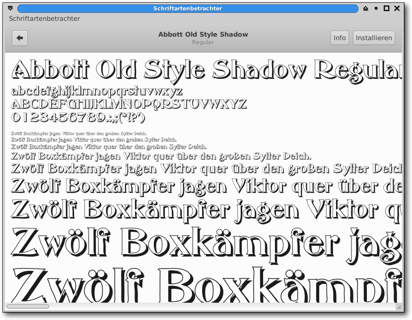Der GNOME Font-Viewer erlaubt die schnelle Installation von Schriften.
Für eine Gesamtübersicht der Schriften ist der Opcion Font Viewer [7] gut geeignet. Nach dem Download und Start der Java-Datei über
$ java -jar Opcion_v1.1.1.jar
kann man im Reiter „Other Fonts“ über den Knopf „Browse“ den Pfad zu den
Schriften auf der DVD angeben. Danach sieht man eine Vorschau der Schriften
mit einem selbst zu definierenden Text und kann sich so leicht die passende
Schrift heraussuchen. Die Installation selbst ist leider nicht über das
Programm
möglich.

Der Opcion Font Viewer.
Ein weiteres gutes Programm zur Betrachtung ist Fontmatrix [8], das zwar nicht mehr aktiv entwickelt wird, aber dennoch einen guten Überblick über Schriften geben kann. Nach der Installation des Paketes fontmatrix kann man rechts unten auf „Browse Directories“ klicken und im Dateibaum links die Schriftordner auf der DVD anwählen. Mit der Auswahl einer Schrift sieht man diese in der Mitte mit einem Beispieltext dargestellt. Wichtiger ist aber der Reiter „Chart“. Über den Eintrag „Block“ kann man verschiedene Unicode-Bereiche prüfen, welche Zeichen in der jeweiligen Schriftart umgesetzt sind. 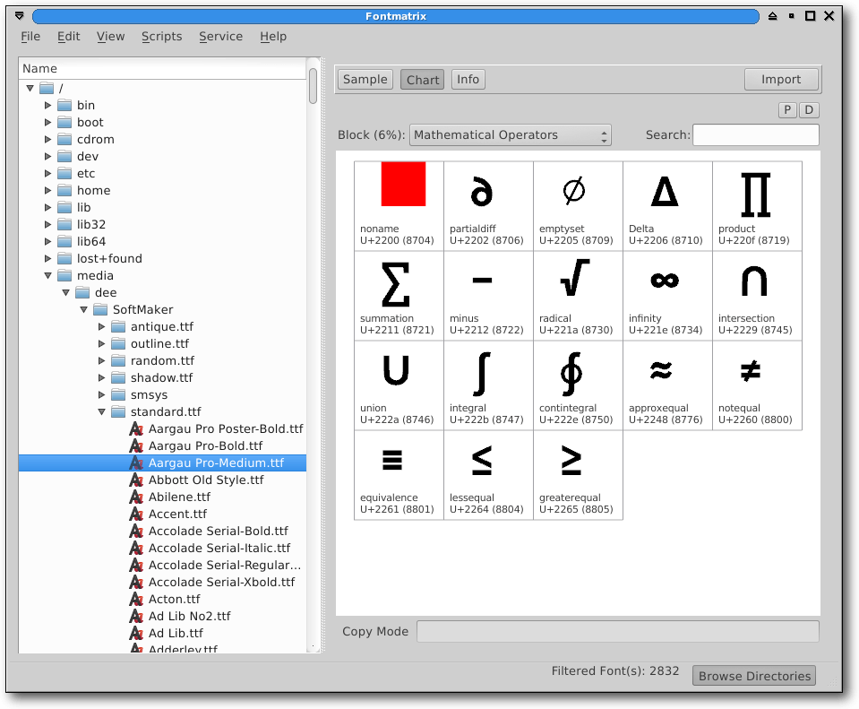
Fontmatrix mit der Darstellung der umgesetzten Zeichen.
Fazit
Wichtig vorab: Die Schriften unterliegen einem Copyright und dürfen nicht weitergegeben werden. Was erlaubt ist, ist die Einbettung in ein PDF, sodass man zumindest die damit erstellten Dokumente weitergeben kann. Insgesamt darf man die Schriftsammlung auf drei Rechnern installieren. Die Menge an 5000 Schriften mag einen erschlagen, aber viele Schriften sind z. B. in verschieden Schriftstärken und -breiten enthalten. Daneben stehen diese Schriften in den Kategorien Antique, Outline, Random und Shadow zur Verfügung. Dennoch bleiben immer noch mehr als 1200 Schriftarten übrig. Ob dies einem der Preis von 39,95 Euro (bzw. 24,95 Euro bei einem Upgrade) wert ist, muss jeder selbst entscheiden. Wichtig ist auch, dass nicht jede Schriftart die gleichen Zeichen umgesetzt hat. So enthalten zwar alle Schriftarten das Euro-Symbol, aber nicht alle ein Pfund-Zeichen. Für komplexe mathematische Texte eignet sich vermutlich keine der Schriftarten. Hinweis: Es wurden nicht alle Schriften, die auf der DVD enthalten sind, getestet, aber die wenigen geprüften unterstützen nur einen kleinen Teil der mathematischen Symbole und anderer Sonderzeichen. Redaktioneller Hinweis: Da Dominik Wagenführ die Schriftsammlung nicht benötigt, wird sie verlost werden. Die Gewinnfrage lautet: „Wie heißt in der Typographie der Vorgang den horizontalen Abstand zwischen mehreren Buchstaben zu verändern?“ Die Antwort kann bis zum 13. Dezember 2015, 23:59 Uhr über die Kommentarfunktion oder per E-Mail an[1] http://www.softmaker.de/
[2] http://www.freiesmagazin.de/freiesMagazin-2012-12
[3] http://www.pro-linux.de/news/1/22982/softmaker-office-2016-fuer-linux-oeffentliche-beta-verfuegbar.html
[4] http://www.softmaker.de/megafont.htm
[5] https://de.wikipedia.org/wiki/TrueType
[6] https://wiki.ubuntuusers.de/Fontmanager
[7] http://opcion.sourceforge.net/
[8] http://fontmatrix.be/
| Autoreninformation |
| Dominik Wagenführ (Webseite) benötigt normalerweise sehr wenig Schriften, und wenn, dann müssen sie auch unter LaTeX funktionieren. |
Beitrag teilen Beitrag kommentieren
Zum Inhaltsverzeichnis
Ubucon 2015 – Willkommen zurück in Berlin!
von Dominik Wagenführ Bereits im Jahr 2012 fand die Ubucon [1], die Konferenz für die deutschsprachige Ubuntu-Community, an der Hochschule für Wirtschaft und Technik (HWTK) in Berlin statt. Aufgrund mangelnder Bewerbungen für das Jahr 2015 waren die Organisatoren froh darüber, dass sich die HWTK erneut anbot [2]. Und wie auch beim letzten Mal war das Treffen ein voller Erfolg.Wissenswertes und Interessantes
Wie jedes Jahr hielt die Ubucon zahlreiche interessante Vorträge und Workshops bereit [3]. Auf fünf Räume verteilt gab es am Samstag und Sonntag insgesamt 32 Präsentationen. Von sehr Ubuntu-nahen Themen bis hin zu Community-Diskussionen war alles dabei. Da aufgrund der Zeitgleichheit nicht alle Vorträge besucht werden konnten, gibt es hier nur eine kurze Übersicht über die, denen ich (zumindest zeitweise) beiwohnen konnte. 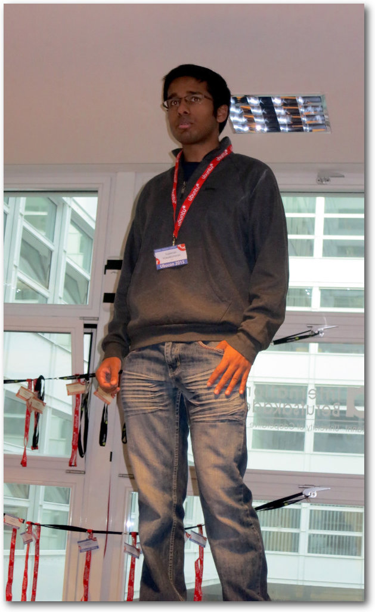Sujeevan Vijayakumaran eröffnet die Ubucon – wie üblich auf einem Tisch stehend.
TCL vs. Python
In dem Vortrag zeigten Uwe Berger als Vertreter der TCL-Fraktion [4] und Frank Hofmann als Python-Vertreter [5], was die beiden Programmier- und Skriptsprachen auszeichnet und wo sie sich unterscheiden. Der gut abgestimmte Vortrag ging dabei über bloße Foliensätze hinaus und zeigte konkrete Anwendungsfälle, die einmal in TCL und einmal in Python gelöst wurden: Listen und Sortierung gehören natürlich zum Standard-Repertoire, aber es wurde auch gezeigt, wie man ein Client-Server-Konzept umsetzt, sich dabei vor Code-Injection-Problemen schützen kann und am Ende sogar die serielle Schnittstelle eines Arduino Nano angesteuert. Leider reichte die Zeit nicht aus, um alle vorbereiteten Beispiele zu zeigen, obwohl der Workshop bereits um 30 Minuten verlängert wurde. Reichhaltige Diskussionen und Fragen aus dem Publikum zeigten aber das Interesse an den Lösungen. Insgesamt machte der Vortrag sehr viel Spaß und ggf. gibt es demnächst wieder ein paar mehr TCL-Nutzer als den einen, der sich im Vortrag dazu outete. 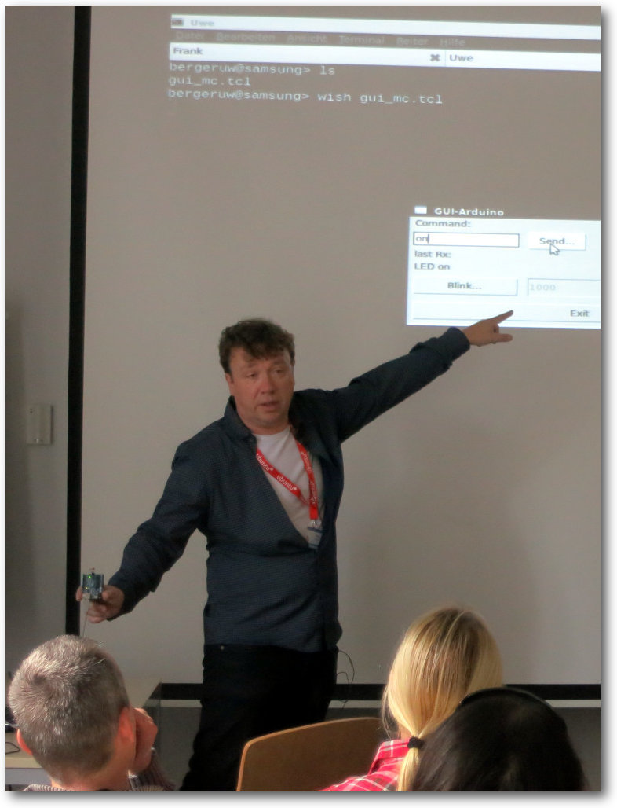Uwe Berger vertrat die TCL-Seite bei dem Vortrag.
Ubuntu Snappy Core
Das Team „DOS“, bestehend aus Ubuntu-Entwickler Daniel Holbach, Ubuntu-Entwickler Oliver Grawert und Ubuntu-Community-Mitglied Sujeevan Vijayakumaran, erklärte den Zuschauern, wie Ubuntu Snappy Core funktioniert und was das System so besonders macht. Vor allem die neuen snap-Pakete, die transaktionale Updates und Rollbacks erlauben, sind eine große Neuerung. Von Drohnen und Kühlschränken über Mini-Computer wie Beaglebone und Raspberry Pi bis hin zu Wearables kann Ubuntu Snappy Core überall eingesetzt und entsprechend angepasst werden. Das System ist dabei stark architektural geprägt und trennt die verschiedenen Bereiche, auf denen der Kernel, das Betriebssystem und die Apps lesen und schreiben können, sodass eine größere Sicherheit gewährleistet wird. Besonders hervorzuheben ist noch die Anwendung Snapcraft [6], die die Erstellung und Paketierung von Programmen übernimmt. Die Bedienung war bei der Live-Demonstration zumindest so einfach, dass ganz leicht beliebige Programme gepackt und veröffentlicht werden konnten. 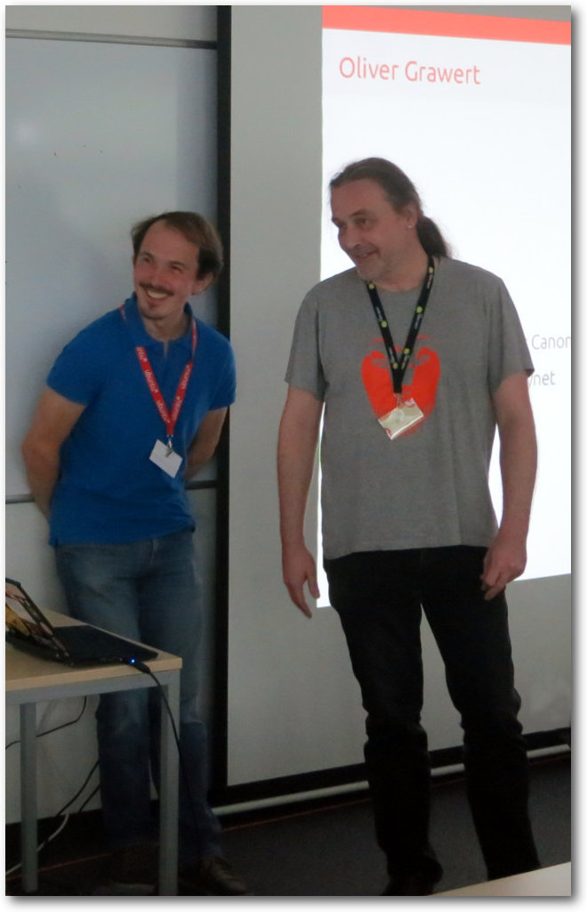Daniel Holbach und Oliver Grawert brachten Snappy den Zuhörern näher.
„Prezis“ mit Inkscape
Prezi [7] ist ein proprietäres Anwendungsprogramm für die Darstellung von Präsentationen mittels Adobe Flash, wobei der Fokus vor allem auf die Übergänge zwischen Inhalten gelegt wird. Ähnliche Effekte kann man mit Inkscape [8] und den Plug-ins JessyInk [9] oder Sozi [10] erreichen, wie Matthias Baran in seinem Workshop zeigte. Schritt für Schritt führte er vor, wie man die Plug-ins bedient und einstellen muss, um in Inkscape mit Hilfe von Ebenen Präsentationen erstellen zu können, die ebenfalls fließende Übergänge zeigen. Das Mitmachen bei JessyInk stellte für die meisten Teilnehmer kein Problem dar, zumal das Plug-in standardmäßig mit Inkscape installiert ist. Bei Sozi stellte sich das Problem, dass die Version auf dem Rechner des Referenten Fehlermeldungen zeigte und nicht immer korrekt funktionierte, was den Ablauf etwas störte. Insgesamt war es aber ein sehr interessanter Vortrag, der dazu animierte, die nächste Präsentation versuchsweise mit Inkscape zu erstellen, statt wie gewohnt mit LaTeX Beamer. 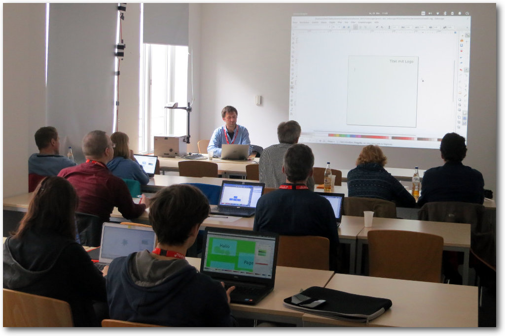Matthias Baran zeigte, wie man Präsentationen mit Inkscape erstellen kann.
Google-freies Android
Passend zum Kauf eines neuen Android-Smartphones vor zwei Wochen gab es einen Vortrag von Alexander Rudolf, wie man sein Android-Gerät ohne Google betreiben kann. Interessanterweise benötigte man dafür ein Google-Konto. Der Referent zeigte auf zahlreichen Folien die Theorie, wie man mittels eines Zweitsmartphones und einem Google-Konto, das nur dort eingerichtet ist, Apps aus dem Google PlayStore installieren kann, um dann die zugehörigen APK-Dateien mittels einen eigenen F-Droid-Servers, auf das eigentlich genutzte Smartphone zu verteilen. Leider handelte es sich (zumindest in der ersten Stunde, die zweite konnte ich nicht verfolgen) nur um die Theorie. Diese ist aber für normale Nutzer alles andere als trivial und so hätte es geholfen, wenn man die Einrichtung am lebenden Beispiel zeigt. Dies hätte dann aber vermutlich einen Vier-Stunden-Workshop erfordert. Insgesamt war der Vortrag etwas enttäuschend, da er sehr theorielastig war. Darüber hinaus konnte der Titel in die Irre führen, da nicht gezeigt wurde, wie man allgemein sein normales Android-Handy ohne Google-Dienste benutzt, sondern über Umwege sich mit Google arrangieren muss. Immerhin gab es Tipps bezüglich der Nutzung von F-Droid als App-Store, OSMand als Kartendienst oder Browser wie Firefox statt Chrome. 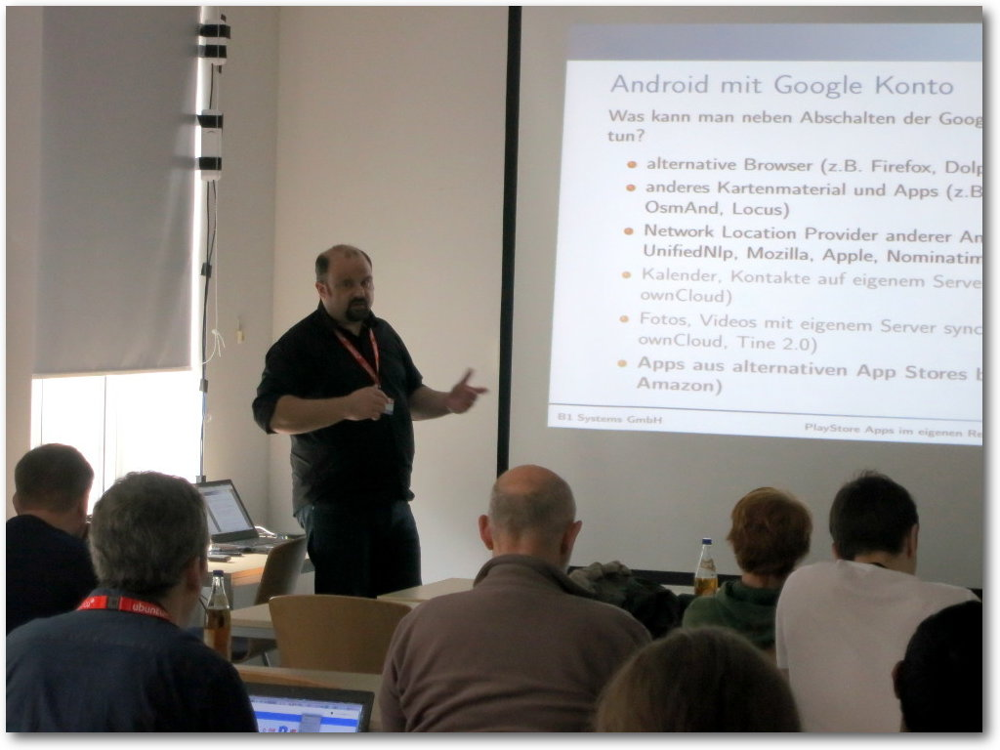Alexander Rudolf erklärte, wie man sein Android-Smartphone Google-frei bekommt.
And the winner is …
Gleich dreimal gab es etwas auf der Ubucon 2015 zu gewinnen. Zum ersten wurde Dank des Einsatzes von Simon Raffeiner, Sujeevan Vijayakumaran, Daniel Holbach und David Planella ein UbuContest veranstaltet [11]. Bei dem Wettbewerb sollten die Teilnehmer aus dem In- und Ausland Apps für das mobile Ubuntu-Betriebssystem schreiben. Insgesamt gab es 25 Einsendungen. Die Gewinner wurden zwar schon Anfang Oktober bekannt gegeben [12], zur Ubucon wurden sie aber eingeladen, um ihre Preise (ein Ubuntu Phone) persönlich in Empfang zu nehmen. In der Kategorie „Beste Einzelleistung“ gewann Simon Stürz, der leider nicht anwesend sein konnte, mit seinem Spiel „Monster Wars“. Als Ausgleich war dafür der junge Niederländer Jorik van Nielen als Zweitplatzierter mit seiner App „Click the Cookie“ anwesend. Als beste Teamleistung wurde das Spiel „Falldown“ von Riccardo Padovani aus Italien und Michał Prędotka aus Schottland prämiert. 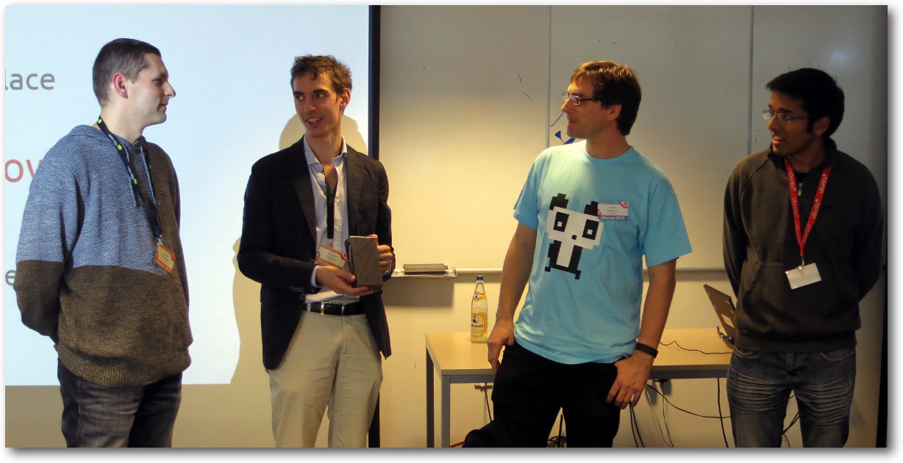Riccardo Padovani (2.v.l.) und Michał Prędotka (links) nahmen den Preis für beste Teamleistung entgegen.
Wie (beinahe) jedes Jahr gab es zum zweiten auch wieder ein Linux-Quiz. Adrian Böhmichen stellte als Quizmaster den jeweils zwei Konkurrenten verschiedene Fragen aus den Bereichen Linux, Ubuntu und Open Source. Immerhin ging kein Teilnehmer leer aus, da beide Plätze ein Buch, welches von den Verlagen mitp, O'Reilly und Rheinwerk gesponsort wurden, mitnehmen konnten. Das letzte Duell fochten dann Ubuntu-Entwickler Daniel Holbach und Ubuntu-Community-Team-Manager David Planella aus, um ihr Wissen in den Bereichen Ubuntu und Ubuntu-Community auf die Probe zu stellen. Beide konnten ihre volle Wissensbandbreite aber leider nicht ausspielen, was natürlich nur daran lag, dass das Quiz-Programm zum Ende der Ratestunde immer wieder abstürzte. Immerhin sorgte dies für einige heitere Momente, als es mit einem sudo mono quiz.exe neu gestartet werden musste. 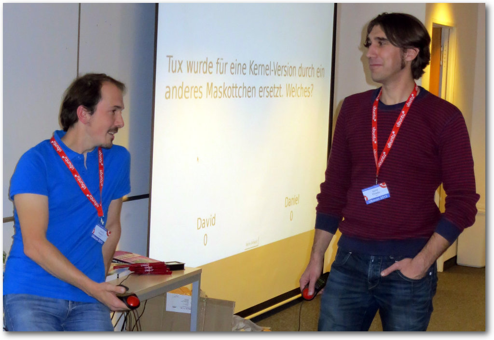
Daniel Holbach und David Planella beim Linux-Quiz.
Zum dritten gab es erstmals auch eine Verlosung auf der Ubucon. Für einen Euro konnten die Teilnehmer Lose kaufen und als Hauptpreis ein Ubuntu Phone gewinnen, das von Freie Computer [13] aus der Schweiz gesponsort wurde. Daneben gab es auch noch weitere Bücher und T-Shirts zu gewinnen. Ungefähr 120 Lose wurden verkauft und am Ende freuten sich ca. 15 Teilnehmer über ihre Gewinne. 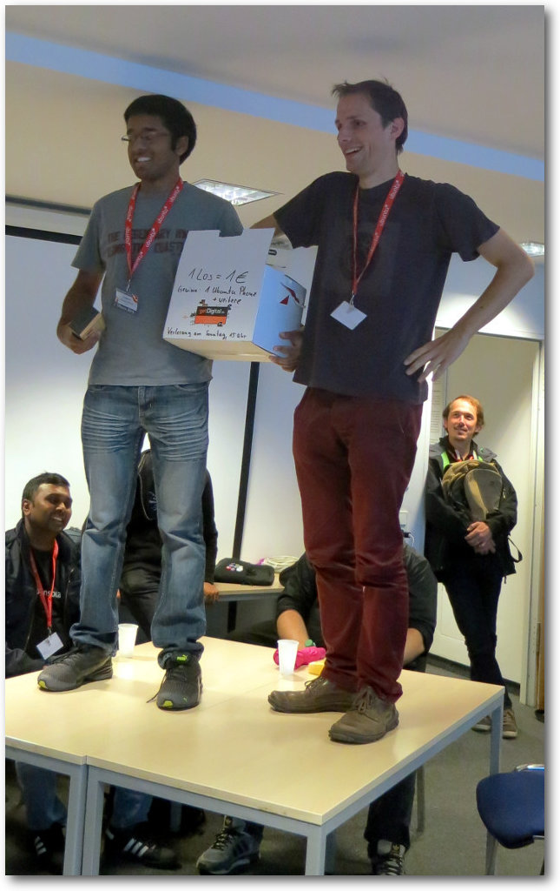
Torsten Franz als Glücksfee bei der Verlosung.
Soziales und Plaudereien
Neben den Vorträgen standen natürlich auch wieder die persönlichen Gespräche und Diskussionen im Vordergrund. Bereits der Vorabendtreff im „Story of Berlin“ [14] brachte die ersten Gesprächspartner zusammen, als man gemeinsam einen Atomschutzbunker besuchte und etwas über die Geschichte Berlins erfuhr. Für manche standen die sozialen Kontakte sogar so sehr im Vordergrund, dass sie kaum einen der Vorträge besuchten. Vor allem die Social Events am Freitag und am Samstag dienen immer wieder intensiven Gesprächen, die sich nicht nur um Ubuntu oder Linux drehen, sondern auch alltägliche Dinge als Thema haben.Wissenswertes bei „Story of Berlin“.
Interessant war es unter anderem, mit den beiden Gewinnern des UbuContest zu reden. Sei es über Berliner Sehenswürdigkeiten, über Deutschland im Allgemeinen oder die Ubuntu-Communities in deren Ländern. Dies gab völlig neue Einsichten und vernetzte die europäische Ubuntu-Gemeinschaft wieder ein Stückchen mehr. 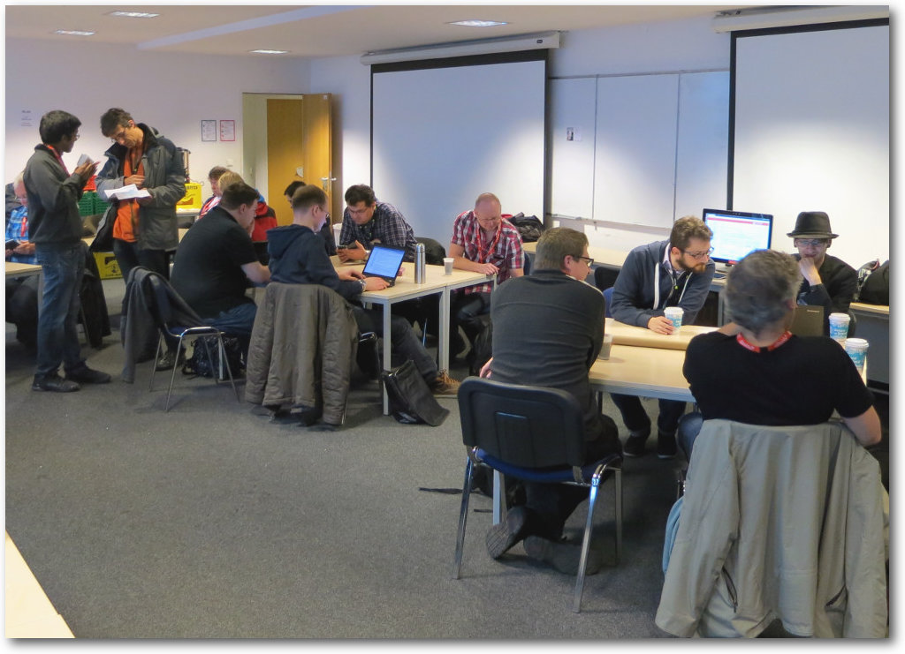
Die Pausen wurden für Gespräche genutzt.
Deutsch und Englisch
Aufgrund des internationalen Publikums gab es 2015 auf der Ubucon vermehrt Beiträge auf Englisch. So wurden beispielsweise die neuesten Informationen zum Thema „Ubuntu und Konvergenz“ von David Planella in Englisch gehalten – auch wenn David, gebürtiger Spanier, derzeit in Deutschland lebt und fließend Deutsch spricht. Aufgrund des Ausfalls eines Referenten wurde auch einer der zahlreichen ownCloud-Vorträge spontan von einem anderen Referenten übernommen, dessen Muttersprache aber nicht Deutsch war und der daher Englisch sprach. Auch der Ubuntu-Snappy-Core-Vortrag wurde, obwohl auf Deutsch angekündigt, in Englisch gehalten. Dies wiederum sorgte zumindest bei einigen deutschsprachigen Teilnehmern für Unmut, da sie so nicht folgen konnten. Die Veranstalter/Referenten wollen aber daraus lernen und zukünftig Vorträge in der Sprache halten, in der sie angekündigt wurden. 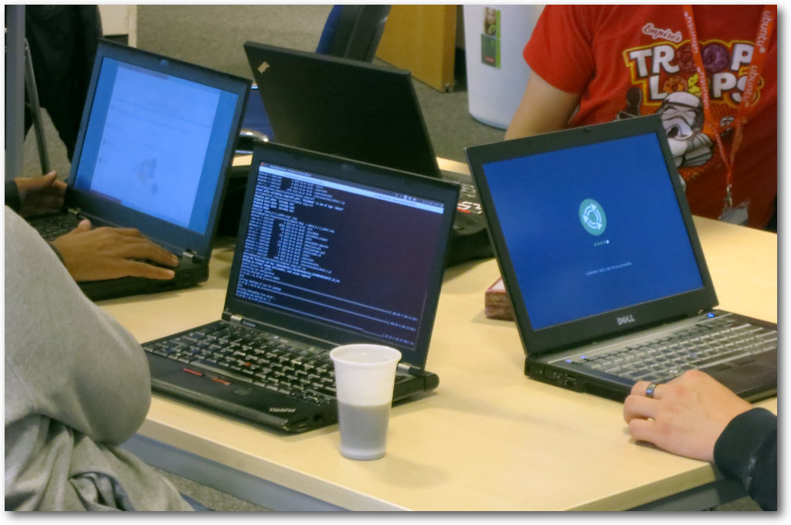Stellenweise wurde tatsächlich auch gearbeitet.
Gedanken zum Schluss
Insgesamt 115 Teilnehmer zählte die Ubucon. Von den 105 angemeldeten Personen fanden immerhin 90 letztendlich auch den Weg nach Berlin. Dazu kamen aber wiederum 25 Teilnehmer, die sich für einen spontanen Besuch am Samstag und/oder Sonntag entschließen konnten. Damit waren es etwas mehr Besucher als im letzten Jahr in Katlenburg. Hauptorganisator Sujeevan Vijayakumaran und der Vereinsvorsitzende des ubuntu Deutschland e. V., Torsten Franz, hielten am Sonntag Nachmittag noch die Schlussworte und dankten allen Beteiligten, bevor sie die Verlosung anstießen. Wie immer waren die Vorträge gut und die Gespräche mit den Teilnehmern interessant und lustig und ebenfalls wie immer gab es zu viele Brötchen. Es können bereits jetzt Wetten darauf abgeschlossen werden, ob bei der Ubucon 2016 das Motto wieder „Eat more buns“ sein wird.Für das leibliche Wohl war wie immer gesorgt.
Die Ubucon 2016 [15] soll als „UbuCon Europe“ erstmals alle europäischen Ubuntu-Communities unter einem Dach zusammenbringen. Hierzu laufen bereits die Planungen. Das Treffen selbst wird voraussichtlich im September des nächsten Jahres in Essen stattfinden. Wie immer gilt: Es werden Helfer gesucht und sich über jeden gefreut, der (zumindest virtuell) mit anpacken will. Hauptorganisator und damit auch Ansprechpartner wird, wie dieses Jahr auch, Sujeevan Vijayakumaran sein [16]. Links
[1] http://ubucon.de/
[2] http://ubucon.de/2015/community-in-touch
[3] http://ubucon.de/2015/programm
[4] https://www.tcl.tk/
[5] https://www.python.org/
[6] https://developer.ubuntu.com/en/snappy/build-apps/
[7] https://prezi.com/
[8] https://inkscape.org/de/
[9] https://launchpad.net/jessyink
[10] http://sozi.baierouge.fr/
[11] http://ubucon.de/2015/announcement-ubucontest-de
[12] http://ubucon.de/2015/ubucontest-gewinner
[13] https://freie.computer/
[14] http://story-of-berlin.de/
[15] http://ubucon.eu/
[16] https://launchpad.net/~ubuconeu
| Autoreninformation |
| Dominik Wagenführ (Webseite) nutzt Ubuntu seit einigen 10 Jahren und war auf fast jeder Ubucon als Besucher, Referent oder als Teil des Organisationsteams anwesend. |
Beitrag teilen Beitrag kommentieren
Zum Inhaltsverzeichnis
Rezension: Seven More Languages in Seven Weeks
von Jochen Schnelle Das Buch „Seven More Languages in Seven Weeks“ [1] ist – wie der Titel schon vermuten lässt – der Nachfolger des 2011 erschienenen Buchs „Seven Languages in Seven Weeks“. Dieses Buch gilt in der IT-Literatur als „moderner Klassiker“, was Konzept und Thematik angeht (Rezension siehe freiesMagazin 07/2011 [2]). Es ist also spannend zu sehen, wie sich der Nachfolger schlägt. Der Untertitel des vorliegenden Buchs macht dann auch klar, wohin dieses Mal die Reise geht: „Languages That Are Shaping the Future“, auf Deutsch in etwa: Zukunftsweisende (Programmier-)Sprachen. In der Tat gehören sechs der sieben behandelten Sprachen eher zur unbekannteren Sorte. Mit Lua [3] hat die erste Sprache als „embeddable scripting language“ noch einen gewissen Bekanntheits- und Verbreitungsgrad. Die sechs weiteren Sprachen sind, den Autoren zufolge, die möglichen Shooting-Stars von morgen: Factor [4], Elm [5], Elixir [6], Julia [7], MiniKanren [8] und Idris [9].Was steht drin?
Das Buch folgt dem gleichen Konzept wie die anderen Bücher der „Seven ... in Seven Weeks“ Serie auch: Es gibt zu jedem Thema, hier also zu jeder der sieben behandelten Programmiersprache, ein dreigeteiltes Kapitel: Im ersten Teil werden grundlegende Konzepte erklärt, im zweiten Teil die weiterführende Möglichkeiten erläutert und im dritten Teil wird dann darauf aufbauend eine komplettes Programm entwickelt, welches die jeweilige Stärke der Programmiersprache herausstellt. Im Kapitel zu Lua wird dabei ein einfaches Musikprogramm entwickelt, das die Einfachheit eines Lua-Skripts und die Anbindung an "low level" C-Code herausstellt. In der funktionalen Programmiersprache Factor wird ein „Shopping Cart System“ geschrieben, welches sich die flexiblen Datenstrukturen der Programmiersprache zu Nutze macht. Mit der ebenfalls funktionalen, aber nach JavaScript kompilierenden Sprache Elm wird ein (einfaches) Spiel programmiert. In der Sprache Elixir, die unter anderem von Erlang, Ruby und Lisp inspiriert ist, wird ein Programm zur Verwaltung eines Videoverleihs geschrieben. Julia hingegen ist eine Sprache, welche ihre Stärken eher in mathematischen und wissenschaftlichen Berechnungen und „data processing“ hat. Hier wird ein Programm geschrieben, das JPEG-Bilder manipulieren beziehungsweise bearbeiten kann. Die Programmiersprache miniKanren ist auf Logik-Programmierung spezialisiert. Mit Hilfe der Sprache wird im Rahmen des Buches ein Geschichten-Generator erstellt. Im siebten Kapitel wird die ebenfalls funktionale Sprache Idris behandelt, wobei der Schwerpunkt auf deren fortschrittlichem System der Typisierung liegt, das als „dependently typed“ bezeichnet wird. Alle Kapitel und die darin enthaltenen Beispiele sind recht praxisnah umgesetzt, sodass sie durchaus als Einstiegspunkt für weiterführende, eigene Schritte mit der jeweiligen Sprache dienen können. Den Abschluss des Buchs bildet dann ein zusammenfassendes Kapitel, welches nochmals die Stärken und auch Schwächen der zuvor behandelten sieben Sprachen heraus- und gegenüberstellt.Wie liest es sich?
Hier sei zunächst vorweggenommen: Es macht viel Freude, das Buch zu lesen. Man merkt beim Lesen durchgehend den Enthusiasmus und den Spaß, den die vier Autoren beim Schreiben hatten. Das Buch ist zwar stets sachlich und kommt auf den Punkt, ist aber nichtsdestoweniger in einem sehr angenehm zu lesenden „Plauderton“ geschrieben. Für den vollen Lesespaß ist es allerdings auch vorteilhaft, wenn man Englischkenntnisse besitzt, die über Schulenglisch hinausgehen. Eine Vielzahl von Codebeispielen, die vollständig im Buch abgedruckt sind, machen den Einstieg in die vorgestellten Programmiersprachen und deren Konzepte ebenfalls einfach und nachvollziehbar.Fazit
Wie auch die anderen Bücher der „Seven ... in Seven Weeks“ Serie ist „Seven More Languages in Seven Weeks“ kein Lehrbuch. Das Ziel ist vielmehr, den Leser beim Blick über den Tellerrand auf die sieben Programmiersprachen zu begleiten und dabei Appetit auf mehr zu machen – was den Autoren des Buchs auch hervorragend gelingt. Wer sich für Programmierung und Programmiersprachen interessiert, dem sei diese Buch unbedingt empfohlen.| Buchinformationen | |
| Titel | Seven More Languages in Seven Weeks [1] |
| Autor | Bruce A. Tate, Ian Dees, Frederic Daoud, Jack Moffitt |
| Verlag | O'Reilly |
| Umfang | 291 Seiten |
| ISBN | 978-1941222157 |
| Preis | 27,95 Euro (Print), 20,96 Euro (E-Book) |
Links
[1] http://shop.oreilly.com/product/9781941222157.do
[2] http://www.freiesmagazin.de/freiesMagazin-2011-07
[3] http://www.lua.org/
[4] http://factorcode.org/
[5] http://elm-lang.org/
[6] http://elixir-lang.org/
[7] http://julialang.org/
[8] http://minikanren.org/
[9] http://www.idris-lang.org/
| Autoreninformation |
| Jochen Schnelle (Webseite) Jochen Schnelle programmiert zwar primär in Python, wirft aber gerne auch einen Blick auf anderen Programmiersprachen. |
Beitrag teilen Beitrag kommentieren
Zum Inhaltsverzeichnis
Rezension: Programmieren lernen mit Python
von Christian Schnell Im Video-Training „Programmieren lernen mit Python“ [1] kann ein Anfänger in über 13 Stunden Videos die ersten Schritte in das Programmieren mit Python machen. Redaktioneller Hinweis: Wir danken dem Rheinwerk Verlag für die Bereitstellung eines Rezensionsexemplares. Der Inhalt des Video-Trainings unterteilt sich in zwölf Kapitel, wobei die ersten sechs Kapitel eher die Grundlagen des Programmierens in Python behandeln und ab Kapitel sieben fortgeschrittene Themen behandelt werden.Inhalt
Nach einer kurzen Einführung beginnt der Sprecher und Autor Thomas Theis mit der Erläuterung der Installation von Python für Windows (für Ubuntu und Max OS X folgt die Erklärung später). Mithilfe der IDLE (Python-IDE) werden anschließend einfache Berechnungen durchgeführt. Weitere Inhalte von Kapitel 1 befassen sich mit dem Speichern von Daten in Variablen sowie mit Kommentaren und erklären die Erstellung des ersten Programms. Für alle drei Betriebssysteme wird die Nutzung der IDLE und das Ausführen von Python-Skripten über die Konsole gezeigt. Im zweiten Kapitel kann man zusammen mit dem Autor ein kleines Rechenspiel für die Konsole programmieren. Die benötigten Kenntnisse werden nach und nach kapitelweise erarbeitet. Besonders die Abschnitte, die Schleifen behandeln, sind sehr gut gelungen. Die verschiedenen Schleifen-Typen werden live ineinander umgewandelt und Hinweise gegeben, was bei den jeweiligen Schleifen besonders zu beachten ist. Für Programmier-Anfänger ist dies schön anschaulich. Rund um Zahlen und mathematische Operationen geht es zunächst im dritten Kapitel. Die verschiedenen Zahlensysteme werden gleich zu Beginn auch für Anfänger gut erklärt. Im zweiten Teil von Kapitel 3 werden Eigenschaften von Zeichenketten und Operationen mit Ihnen erläutert. Weitere Datentypen werden anschließend in Kapitel 4 vorgestellt. Die Unterschiede zwischen den Datentypen werden durch Code-Beispiele und Abgrenzungen bei den Erklärungen zu einzelnen Datentypen gut verdeutlicht. Kapitel 5 behandelt Funktionen. Mit deren Hilfe wird das Rechenspiel aus den vorherigen Kapiteln neu gegliedert und erscheint auf einmal wieder schön übersichtlich. Erstmals erhält man in diesem Kapitel auch Hinweise auf die Dokumentation bzw. Hilfe zu Python und wo man z. B. Informationen zu bereits vorhandenen Funktionen von Python suchen kann. Nachdem zwar auch im bisherigen Kursverlauf hin und wieder Fehler im Code auftauchten und erklärt wurden, werden unter anderem diese in Kapitel 6 nun systematisch behandelt. Fehler macht man natürlich am besten selbst, um aus ihnen zu lernen, aber durch das Sehen dieser Videos kann man wenigstens mit einigen Ausnahmebehandlungen (Exceptions) schon etwas anfangen und bekommt ein Gefühl für das Behandeln und Beseitigen von Fehlern. Das nachfolgende Kapitel 7, in dem die objektorientierte Programmierung eingeführt wird, ist eine solide Einführung, welche die für einen Anfänger wichtigen Aspekte beleuchtet und eine gute Grundlage bildet, aber auch nicht mehr. Zum Abschluss wird das bereits früher verwendete Kopfrechenspiel objektorientiert neu programmiert. Hier hätte der Autor allerdings ein etwas konzeptionelleres Arbeiten zeigen können. Die verschiedenen Klassen werden mit ihren Methoden einfach eingetippt und knapp erläutert, sodass das Spiel anschließend gut funktioniert, aber man lernt wenig darüber, wie man von der Programmidee zu einem objektorientierten Programm gelangt. In Kapitel 8 zeigt der Autor, wie Dateien bearbeitet werden. Der Abschnitt mit dem Titel „Dateien für Excel erzeugen“ beschränkt sich dann allerdings auf das Erzeugen und spätere Auslesen von csv-Dateien. Kapitel 9 beschäftigt sich damit, wie man mit Python auf SQL-Datenbanken zugreift und die verschiedenen Manipulationen der Tabellen und Datensätze durchführt. Die Einführung in SQL gestaltet sich kurz und knapp. Für die ersten Schritte in SQLite reicht es aber allemal. In den nächsten beiden Kapiteln werden zunächst einfache grafische Oberflächen mithilfe von Tkinter erstellt. Die verschiedenen Widgets werden genauso wie das Auswerten von Mausereignissen sehr ausführlich vorgestellt. Insgesamt stellt dieses Kapitel eine gute Einführung für Anfänger in Python dar. Besonders im nächsten Kapitel über fortgeschrittene grafische Oberflächen macht sich das Videotraining sehr gut, da man das unterschiedliche Verhalten der Elemente bei verschiedenen Layoutmanagern auf der Benutzeroberfläche sehr gut zeigen und erkennen kann. Im letzten Kapitel führt der Autor die Programmierung eines Vokabeltrainers für verschiedene Sprachen vor, wobei viele der zuvor gelernten Inhalte eingesetzt werden.Qualität der Videos
Die Videos sind in sehr guter Qualität. Die Kapitel sind noch einmal in Unterkapitel und Abschnitte gegliedert. Zusammen mit der Such- und Indexfunktion findet man sich schnell zurecht. Das Begleitmaterial besteht aus den im Video-Training programmierten Python-Skripten.Kritik
Die wichtigsten Grundlagen von Python werden für einen Programmieranfänger gut erklärt, allerdings lernt man wenig über Programmierkonzepte. Verweise auf die Python-Dokumentation werden nur sehr selten gegeben und andere Quellen lernt man fast gar nicht kennen. Mir scheint, dass die Einstiegsschwelle hier für absolute Anfänger bewusst sehr niedrig gewählt wurde. Teilweise sind die Kapitelüberschriften unglücklich gewählt. So werden einige Begriffe in der Kapitelüberschrift (und damit im Inhaltsverzeichnis) ins Deutsche übersetzt, im Kapitel selbst aber die englische Bezeichnung verwendet, z. B. Wörterbücher bzw. Dictionaries. Das macht es (nicht nur) für Anfänger verwirrend, im Videotraining die gesuchten Informationen zu finden. Auf der anderen Seite werden andere Funktionsnamen so ausgesprochen wie sie geschrieben werden („sqrt“), ohne dass zumindest einmal erklärt wird, wofür dieser Name steht. Ebenfalls kritisch zu sehen ist die oft kryptische Variablenbezeichnung und die (überwiegend) fehlende Kommentierung der gezeigten Code-Beispiele. Einige Dinge werden einfach erwähnt, ohne Erklärungen zu nennen (z. B. die gestrichelte Linie bei den Tkinter-Ausklappmenüs, die man zum Abdocken der Menüleiste nutzen kann, was aber selten gewünscht ist). In der Beschreibung zum Videotraining wird u. a. auch auf Kapitel zur Ansteuerung des Raspberry Pi verwiesen und auf beiliegenden Quellcode für die Python-Versionen 2 und 3 hingewiesen. Die Programmbeispiele sind allerdings alle für Python 3.4 geschrieben und der Raspberry Pi taucht im Videotraining überhaupt nicht auf.Fazit
In einem Buch dieser Preisklasse lassen sich wohl mehr und tiefere Informationen finden, als es in einem Videotraining möglich ist. Wer aber noch keine Programmiererfahrung hat, niedrigschwellig ins Programmieren einsteigen möchte und lieber ein Video schaut statt ein Buch zu lesen, ist mit diesem Videotraining – auch wenn es seine Schwächen hat – für den ersten Einstieg gut bedient.| Buchinformationen | |
| Titel | Programmieren lernen mit Python - Das Training für Einsteiger [1] |
| Autor | Thomas Theis |
| Verlag | Spielzeit 13 Stunden |
| Umfang | Rheinwerk-Verlag, 2014 |
| ISBN | ISBN 978-3-8362-3536-5 |
| Preis | 39,90 € (DVD, Download) |
Links
[1] https://www.rheinwerk-verlag.de/programmieren-lernen-mit-python_3674/
| Autoreninformation |
| Christian Schnell entwickelt unter anderem Python-Skripte, um die Auswertung von Routine-Experimenten im Labor zu automatisieren und zu beschleunigen. |
Beitrag teilen Beitrag kommentieren
Zum Inhaltsverzeichnis
Leserbriefe
Für Leserbriefe steht unsere E-MailadresseLeserbriefe und Anmerkungen
Eine Geschichte von Linux
-> Der Artikel ist gut gemeint, doch enthält er einige Fehler. Die Überschrift heißt „Eine Geschichte von Linux“. Diese Geschichte beginnt mit Linus Torvalds. Die Vorgeschichte, die der Autor erzählt, ist eine Geschichte von Unix. Im Artikel steht: „Das Projekt nahm während der weiteren Entwicklung betriebssystemähnliche Züge an“. Linus Torvalds hat mit einem Betriebssystem (nämlich Minix) gestartet und hat letztendlich einen neuen Kernel gebaut. Ein Kernel ist ein (enorm) wichtiger Teil einer Betriebssystems, aber es ist nicht das Betriebssystem. Der Motor im Auto ist auch enorm wichtig (ohne läuft nichts), aber der Motor ist nicht das Auto. Dann sollte man auf die Feinheiten der Name achten (das macht natürlich kaum jemand, auch im freiesMagazin niemand). Der Linux Kernel, der ist von Linus Torvalds und heißt Linux. Nur mit einem Kernel hat man noch kein Betriebssystem (siehe oben). Dazu sind viele Programme notwendig. Hier kommt das erwähnte GNU ins Spiel. GNU hat genau diese Programme und hat als Kernel am Anfang Hurd benutzt. Daraus folgt: GNU ist ein Betriebssystem. Wenn GNU den Linux Kernel benutzt, dann heißt es richtigerweise GNU/Linux.Manfred Lotz (Kommentar) <- […] Ich habe als Titel „Eine Geschichte von Linux“ gewählt, da in meinem Artikel erzählen wollte, wie Linux entstand. Ich finde, dass die Entwicklung von Unix essentiell für den Artikel ist, denn ohne Multics, Unix und Minix wäre Linux, so wie wir es kennen, möglicherweise nie entstanden. Ich könnte mir vorstellen, dass das Problem, das Sie mit dem Titel haben, davon herrührt, dass ich als Geschichte von Linux die Entwicklung bis zum ersten Release des Linux-Kernels bezeichnet habe und Sie als Geschichte von Linux eher die Entwicklung ab dem ersten Release verstehen. Zum zweiten Punkt: […] Soweit ich es verstanden habe, entwickelt Linus Torvalds zuerst eine Sammlung von Programmen (Terminal-Emulator, Filesystem-Treiber etc.), diese Sammlung nimmt im Lauf der Entwicklung betriebssystemähnliche Züge an (enthält also auch einen Kernel) und schließlich wird der Kernel des betriebssystemähnlichen Projekts veröffentlicht. […] Der Artikel ist zwar in dieser Hinsicht nicht falsch, er bringt aber die Situation nicht ganz klar zum Ausdruck. Als ich noch mal nachrecherchiert habe, bin ich allerdings auf verschiedene Seiten gestoßen, von denen die einen behaupten, dass Torvalds das Betriebssystem veröffentlichte, andere behaupten, dass Torvalds nur den Kernel veröffentlichte. Falls Sie dazu Genaueres wissen, würde mich das natürlich sehr interessieren. […] Das Problem mit den doppeldeutigen Begriffen gibt es im Linux-Bereich ja aber scheinbar öfter; GNU, KDE und Linux seien nur drei Beispiele von Begriffen, die (zumindest in der Umgangssprache) verschiedene Bedeutungen haben. Da mich auch hier eine Erklärung Ihrerseits interessieren würde, würde ich Ihnen vorschlagen, doch einfach selbst einen Artikel für das freiesMagazin zu schreiben, in dem Sie zum Beispiel die wichtigsten Begriffe der Linux-Szene nennen und die Bedeutungen dieser erklären oder Falschverwendungen richtig stellen.
Jakob Moser -> Ich bin schockiert, dass in diesem Artikel mit keiner Silbe die Fortentwicklung der Konzepte, die Multics und Unics geprägt hatten, Erwähnung finden! Auch Plan 9 und ultimativ Inferno wurden komplett vergessen. Wie konnte das nur geschehen. Nein, im Ernst: eine schöne kleine Übersicht, die J.M. da abgeliefert hat, halt nicht nur zu Linux. Aber wenn man die „Wurzeln“ desselben bis zu den 1960ern verorten möchte, sollte gerechterweise auch weiter ausgeholt werden. Vielleicht gibt es noch Teil zwei? Wie erwähnt, fanden Kommerzialisierungsbemühungen ab den 1980ern seitens AT&T statt. Das schlägt dann auf die BSDs, aber auch auf Linux durch (Quellcode und Rechte an eben diesem) – Stichwort SCO. Das Verhalten und die Einstellung zu freier Software (und hier Linux im speziellen) von MS, Apple und IBM und eine eventuelle Änderung über die Zeit (von den Halloween Documents bis zur OS X-Basis Darwin). Was satirisch erscheint [1], sollte man manchmal doch auch ernst nehmen [2]. Da wäre noch Platz für so viel mehr. Also da capo, Zugabe...
Gast (Kommentar)
WPS Office
-> Voller Interesse las ich den Artikel über dieses Office-Paket, dass ich seit einiger Zeit ausprobiere und muss gestehen, dass ich statt neuem zu erfahren, enttäuscht bin. Denn dies war leider zu oberflächlich. Deshalb ein paar ergänzende Informationen: Wer MS Office im Betrieb nutzt und zu Hause weiter arbeiten will, aber mit Linux, wird bei jeder mir bekannten Lösung immer wieder die eine oder andere Schwierigkeit haben. Insbesondere die SmartTags von MS Office machen einem auf Linux zu schaffen. Dies trifft auf LibreOffice und auch auf Softmaker zu, um einmal zwei Bekanntere zu nennen. Keine Probleme hat man dabei mit WPS. Da habe ich noch nie solche Schwierigkeiten gehabt. Bugs gibt es zum Beispiel im Tabellenprogramm, die seit der letzten Aktualisierung keine Diagramme mehr anzeigt. Auch sind die vielen Vorlagen nur Englisch und können dadurch ohne Änderung nicht im Deutschen genutzt werden. Sicherlich bietet LibreOffice durch das Zeichenprogramm und die Datenbank deutlich mehr und ist für mich immer noch die Nummer eins unter Linux. Doch manche Dinge lassen sich leider noch nicht hundertprozentig erledigen, wenn man eine MS-Office-Vorlage nutzen muss. Genau hier ist WPS eine interessante Alternative. Ist das MS-Office-Format ein negatives Kriterium für WPS? Ich denke nicht, denn mit Gnumeric, Abiword, Softmaker, LibreOffice etc. lassen sich auch diese Formate öffnen. Damit kann man WPS in Linux gut integrieren. Ergo, eine gute Alternative für Menschen, die in zwei „Welten“ arbeiten müssen. P.S.: Die Linux-Community bietet für WPS ein integriertes deutsches Sprachpaket ein, dass ich in der kostenlosen Windows-Version noch nicht gefunden habe.Walter Eisenhauer -> LibreOffice kann seine Stellung behaupten, wenn es gelingt verschiedene Schwächen zu beseitigen und darauf die Priorität zu setzen. Dazu müssen sich die Programmierer mit den Beiträgen in den entsprechenden Foren beschäftigen.
R.S. (Kommentar)
Anno 1404
-> Da hat einer im Anno-Wiki behauptet, dass er schon längst ein Ubuntu-System hätte, wenn Anno 1404 dort laufen würde. Ich mache es kurz: Ich habe Ubuntu 15.04, habe die DVD eingespielt von Computerbild, Anno 14.04 funktioniert mit Playonlinux und der neuesten Wine-Version. […] Bei der Einstellung der Bit-Zahl im Spiel selbst muss man auf 32 Bit stellen, auch wenn man selbst wie ich ein 64-bit Laptop hat, dann geht es!Raymond99 Links
[1] http://www.mslinux.org
[2] http://www.wired.com/2015/09/microsoft-built-linux-everyone-else/
Die Redaktion behält sich vor, Leserbriefe gegebenenfalls zu kürzen. Redaktionelle Ergänzungen finden sich in eckigen Klammern. Beitrag teilen Beitrag kommentieren
Zum Inhaltsverzeichnis
Veranstaltungskalender
| Messen | ||||
| Veranstaltung | Ort | Datum | Eintritt | Link |
| Chaos Communication Congress | Hamburg | 27.12.–30.12.2015 | – | https://events.ccc.de/congress/2015 |
| Global Game Jam | Weltweit | 29.01.–31.01.2016 | frei | http://globalgamejam.org/ |
| FOSDEM | Brüssel | 30.01.–31.01.2016 | – | https://fosdem.org/ |
| Chemnitzer Linux-Tage | Chemnitz | 19.03.–20.03.2016 | – | http://chemnitzer.linux-tage.de/ |
Vorschau
freiesMagazin erscheint am ersten Sonntag eines Monats. Die Januar-Ausgabe wird voraussichtlich am 3. Januar u. a. mit folgenden Themen veröffentlicht:- Let's Encrypt
- Rezension: Doing Math with Python
- Rezension: Gut gerüstet gegen Überwachung im Web
Konventionen
An einigen Stellen benutzen wir Sonderzeichen mit einer bestimmten Bedeutung. Diese sind hier zusammengefasst:| $: | Shell-Prompt |
| #: | Prompt einer Root-Shell – Ubuntu-Nutzer können hier auch einfach in einer normalen Shell ein sudo vor die Befehle setzen. |
| ~: | Abkürzung für das eigene Benutzerverzeichnis /home/BENUTZERNAME |
Impressum ISSN 1867-7991
freiesMagazin erscheint als PDF, EPUB und HTML einmal monatlich.Erscheinungsdatum: 6. Dezember 2015
| Kontakt | |
| Postanschrift | freiesMagazin |
| c/o Dominik Wagenführ | |
| Beethovenstr. 9/1 | |
| 71277 Rutesheim | |
| Webpräsenz | http://www.freiesmagazin.de/ |
| Autoren dieser Ausgabe | |
| Hans-Joachim Baader | Ubuntu und Kubuntu 15.10, Thruk – Besser überwachen |
| Mathias Menzer | Der November im Kernelrückblick |
| Christian Schnell | Rezension: Programmieren lernen mit Python |
| Jochen Schnelle | Rezension: Seven More Languages in Seven Weeks |
| Dominik Wagenführ | MegaFont NEXT – Schriften auch für Linux, Ubucon 2015 – Willkommen zurück in Berlin! |
| Redaktion | |
| Christian Schnell | Matthias Sitte |
| Dominik Wagenführ (Verantwortlicher Redakteur) | |
| Satz und Layout | |
| Moritz Kiefer | Benedict Leskovar |
| Kai Welke | |
| Korrektur | |
| Daniel Braun | Frank Brungräber |
| Vicki Ebeling | Stefan Fangmeier |
| Mathias Menzer | Christian Schnell |
| Karsten Schuldt | |
| Veranstaltungen | |
| Ronny Fischer | |
| Logo-Design | |
| Arne Weinberg (CC-BY-SA 4.0 Unported) | |
Soweit nicht anders angegeben, stehen alle Artikel, Beiträge und Bilder in freiesMagazin unter der Creative-Commons-Lizenz CC-BY-SA 4.0 International. Das Copyright liegt beim jeweiligen Autor. Die Kommentar- und Empfehlen-Icons wurden von Maren Hachmann erstellt und unterliegen ebenfalls der Creative-Commons-Lizenz CC-BY-SA 4.0 International. freiesMagazin unterliegt als Gesamtwerk der Creative-Commons-Lizenz CC-BY-SA 4.0 Unported mit Ausnahme der Inhalte, die unter einer anderen Lizenz hierin veröffentlicht werden. Das Copyright liegt bei Dominik Wagenführ. Es wird erlaubt, das Werk/die Werke unter den Bestimmungen der Creative-Commons-Lizenz zu kopieren, zu verteilen und/oder zu modifizieren. Die xkcd-Comics stehen separat unter der Creative-Commons-Lizenz CC-BY-NC 2.5 Generic. Das Copyright liegt bei Randall Munroe.
Zum Inhaltsverzeichnis
File translated from TEX by TTH, version 3.89.
On 6 Dec 2015, 10:34.